本文介绍 MiniCPM4，一款专为端侧设备设计的高效 LLM。我们通过模型架构、训练数据、训练算法和推理系统四个关键维度的系统性创新实现这一效率。具体而言，在模型架构方面，我们提出 InfLLM v2，一种可训练的稀疏 attention 机制，能够加速长上下文处理的 prefill 和 decoding 两个阶段。在训练数据方面，我们提出 UltraClean，一种高效且准确的预训练数据筛选与生成策略，以及综合性的 SFT 数据集 UltraChat v2。这些数据集使模型仅使用 8 万亿训练 token 就能达到令人满意的性能。在训练算法方面，我们提出 ModelTunnel v2，用于高效搜索预训练策略；并通过引入分块 rollout，实现负载均衡的强化学习，以及数据高效的三值 LLM BitCPM，改进现有后训练方法。在推理系统方面，我们提出 CPM.cu，将稀疏 attention、模型量化和投机采样整合起来，实现高效 prefill 与 decoding。为满足多样化的端侧需求，MiniCPM4 提供参数量分别为 0.5B 和 8B 的两个版本。此外，我们构建了混合推理模型 MiniCPM4.1，既可用于深度推理模式，也可用于非推理模式。评估结果表明，MiniCPM4 和 MiniCPM4.1 在各项基准上均优于同等规模的开源模型，其 8B 版本在长序列理解与生成中表现出显著的速度提升。
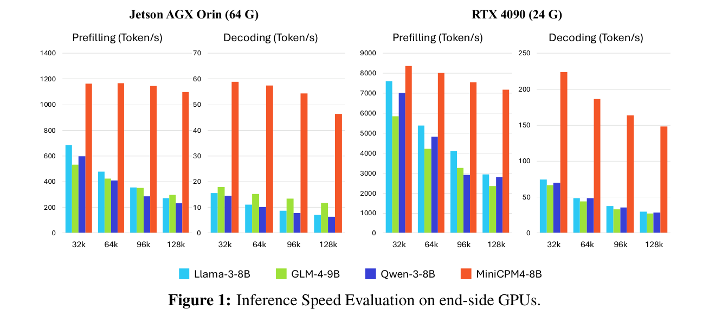
LLM（Brown et al., 2020; OpenAI, 2023），也称为基础模型（Bommasani et al., 2021），已经成为人工智能（AI）领域的核心驱动力（Qiu et al., 2020; Han et al., 2021）。这些大模型展现出处理多样化任务的卓越能力，从有用的聊天机器人系统（Ouyang et al., 2022）到复杂的推理系统（OpenAI, 2024b; DeepSeek et al., 2025），显著提升了人机交互的质量与效率。然而，随着模型规模持续扩大（Kaplan et al., 2020; Hoffmann et al., 2022），计算资源需求呈指数增长，导致这些模型主要部署在云服务器上，并通过 API 接口访问。
LLM 的发展目前正面临小型化和效率提升这一重要趋势。从应用角度看，高效模型能够降低部署成本、拓展应用场景，尤其是在端侧设备和移动终端等计算资源受限的环境中（Gunter et al., 2024; OpenAI, 2024a）。从技术发展角度看，随着模型规模持续增长，提高计算效率对于利用有限资源突破性能瓶颈至关重要（DeepSeek et al., 2024）。因此，在维持模型能力的同时尽量降低计算需求的高效模型架构和算法，具有重要的理论与实践意义。
顺应 LLM 效率提升的趋势，我们团队一直专注于构建高效的端侧 MiniCPM 模型（Hu et al., 2024; Yao et al., 2024）。本文通过模型架构、训练数据、训练算法和推理系统四个关键维度的系统性创新，进一步提升模型效率。基于这些进展，我们成功开发 MiniCPM4，一款能够在端侧芯片上高效计算的 8B LLM。值得注意的是，与高效 LLM Qwen3-8B 相比，MiniCPM4 仅用其 22% 的训练数据便取得相当的性能，同时在端侧设备上处理长度为 128K 的文档时实现 7 倍速度提升。
具体而言，MiniCPM4 具备以下技术，在保持模型能力的同时提升计算效率：
随着 LLM 广泛应用于长上下文处理（OpenAI, 2025; Jimenez et al., 2023），以及对深度推理能力的追求（DeepSeek et al., 2025; OpenAI, 2024b），模型理解和生成长序列的需求日益关键。然而，自 attention 机制对计算和内存的需求，给端侧设备高效处理长文档带来重大挑战。我们提出稀疏 attention 架构，在维持模型性能的同时实现高效长上下文处理。
高质量数据对于提升 LLM 的能力密度至关重要（Xiao et al., 2024a）。海量互联网语料虽然提供丰富的训练信号，但不可避免地包含噪声，导致性能未达最优。基于已有的数据清洗和筛选方法（Penedo et al., 2024），我们提出高效的迭代数据清洗策略 UltraClean，得到高质量的知识密集型数据集 UltraFineWeb（Wang et al., 2025b）。此外，考虑到推理密集型数据的稀缺，我们专门针对数学和代码开展大规模数据合成。这些方法使我们仅用 8 万亿 token 的预训练数据，就能开发出性能令人满意的模型。
（承接上页 UltraClean 条目）
验证策略，我们能够公正地选择高质量种子数据来训练分类器。基于“高质量种子数据有益于 LLM 训练”的假设，我们开发并优化分类器训练种子和训练方案的选择策略，同时精心整理均衡的正负样本集合，以确保分类器的质量和鲁棒性。我们将所提出的数据筛选流程应用于 FineWeb（Penedo et al., 2024）和 Chinese FineWeb（Yu et al., 2025b）数据集，将所得数据统称为 UltraFineWeb。这一流程不仅提升筛选效率、分类器质量和鲁棒性，还显著降低实验与推理成本。
LLM 的 scaling laws 表明，性能会随训练量增加而提升（Kaplan et al., 2020）。因此，降低训练成本对于模型规模的可持续扩展至关重要。在 Hu et al.（2024）中，我们开发 ModelTunnel，通过一系列小规模模型实验搜索最优训练策略。在开发 MiniCPM4 时，我们进一步提高搜索准确性，推出 ModelTunnel v2。在高效后训练机制方面，我们在强化学习（RL）过程中采用负载均衡的 rollout 策略，能够更充分地利用 rollout 过程中的计算资源。此外，为降低存储需求，我们引入三值 LLM BitCPM4。
（承接上页）
在投机采样中获得更高的接受长度。FP-8 混合精度训练能够充分利用 GPU 集群的计算能力。
端侧设备的计算能力和存储资源有限。为充分利用这些设备，我们定制了高性能推理框架。
基于上述技术，我们构建了参数量为 0.5B 和 8B 的两个 MiniCPM4 版本，每个版本都有通用和深度推理变体。在预训练阶段，我们使用 8.3T 高质量 token 训练 8B 模型。我们采用 warmup—稳定—衰减（WSD）学习率调度器（Hu et al., 2024），将 7T token 分配给 warmup 与稳定阶段，将 1.3T token 分配给退火阶段。随后，我们进行长上下文预训练，将 MiniCPM4 的上下文窗口从 4K 扩展到 128K token。之后，进行 SFT 后训练，使模型能够遵循用户指令。为进一步开发混合推理模型 MiniCPM4.1，我们使用长 CoT 数据进行 SFT，并基于数学和代码任务实施强化学习。MiniCPM4.1 在 MiniCPM4 基础上使用改进的后训练语料进行训练。MiniCPM4.1 是混合模型，能够用于推理和非推理两种模式。我们在一系列广泛使用的基准上评估 MiniCPM4 和 MiniCPM4.1。它们优于参数规模相近的典型基线，成为最有效且最高效的开源 LLM 之一。
最后，基于 MiniCPM4，我们开发三个应用，以展示 MiniCPM4 的有效性并探索先进技术，包括可信综述生成和通过 Model Context Protocol（MCP）使用工具。这三个应用都要求模型能够生成高度连贯且逻辑清晰的长序列，调用复杂函数来获取外部资源，并进行创造性写作。结果表明，MiniCPM4 在这些应用上展现出有希望的表现；我们鼓励社区基于 MiniCPM4 探索更多有趣的应用。
译注：原文此处称“三个应用”，但第 6 节列出综述生成与 MCP 工具使用两个应用，保留原文表述。
本节介绍 MiniCPM4 所采用的模型架构与训练算法，其特点是高效稀疏 attention 层和高效训练流程。本节首先介绍所提出的 InfLLM v2 的细节，它支持高效长上下文处理。具体而言，InfLLM v2 使 MiniCPM4 在 attention 稀疏度为 81% 时，达到与全 attention 机制相当的长上下文处理能力。随后，我们描述支持高效知识学习的预训练数据管理方法。最后，我们介绍预训练流程，包括用于超参数搜索的 ModelTunnel v2，以及预训练目标和长上下文扩展的工程实现。所有这些方法使 MiniCPM4-8B 仅使用 Qwen3-8B 的 22% 预训练 token，就取得与其相当的结果。
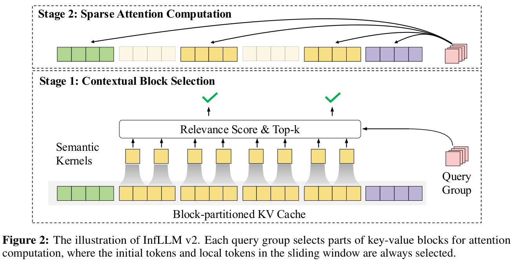
与大多数开源 LLM 一样，我们采用 Transformer（Vaswani et al., 2017）作为基础架构。考虑到不断增长的长序列处理需求，许多研究致力于设计无需训练的稀疏 attention 机制，动态选择相关上下文 token 来处理长上下文（Xiao et al., 2023; Jiang et al., 2024; Xu et al., 2025; Zhang et al., 2025a）。这些模型由于稀疏度不够理想，只能用于 prefill 加速。
最近，MoBA（Lu et al., 2025）和 NSA（Yuan et al., 2025）将稀疏 attention 用于预训练阶段，以提升模型性能。然而，MoBA 使用 query 块设计，无法在 decoding 阶段实现加速。此外，根据我们的观察，相邻 token 的相关上下文通常差异很大。因此，强制相邻 token 共享相同上下文可能导致性能未达最优，同时也无法提高 attention 的稀疏度。NSA 引入三个不同的 attention 组件来捕获远距离信息。这三个组件引入额外参数，增加短序列的计算开销，并使预训练的 key-value 存储成本增至三倍。
本节基于我们先前的稀疏 attention 模型 InfLLM（Xiao et al., 2024b），设计可训练稀疏 attention InfLLM v2，以降低 prefill 与 decoding 两个阶段的计算和内存访问成本。InfLLM v2 不为 attention 输出引入额外参数，也不会影响短序列推理。此外，我们提出高效的 Top-K 上下文块选择方法，与 NSA 相比可降低 60% 的计算成本。以下段落将介绍 InfLLM v2 的算法设计。
在稀疏 attention 机制中，我们只选择一部分上下文 token 来计算 attention。沿用 InfLLM，我们将 key-value 缓存划分为块级单元，每个 query token 选择相关性分数最高的块来计算 attention。形式上，每个 attention 层的输入都是一个隐藏向量序列，每个向量代表一个 token 的上下文信息。给定输入序列 \(X = \{x_{1}, x_{2}, \ldots , x_{l}\}\)，自 attention 机制首先将它映射为 query、key 和 value 向量 \(Q = \{q_{1}, q_{2}, \ldots , q_{l}\}\)、\(K = \{k_{1}, k_{2}, \ldots , k_{l}\}\)、\(V = \{v_{1}, v_{2}, \ldots , v_{l}\}\)。这里，\(l\) 是输入序列长度。在稠密 attention 机制中，每个 token 都需要关注所有前序 token，可表示为 \(o_{i} = Attention(q_{i}, (K_{1:i}, V_{1:i}))\)。相比之下，稀疏 attention 只选择性地关注部分相关 token。我们将 key-value 缓存划分为块，以避免细粒度的 token 级相关性计算和内存访问，从而提升稀疏 attention 效率。具体而言，InfLLM v2 将 key-value 缓存划分为大小相同的块，每块包含 \(m\) 个 token。key-value（接下页）
缓存因此被划分为 \(B = \{B_0,\ldots,B_{\lfloor l/m\rfloor-1}\}\)，其中 \(B_j = (K_{jm:(j+1)m}, V_{jm:(j+1)m})\)。这里，\(m\) 为 key-value 块的大小。
InfLLM v2 的稀疏 attention 计算包含两个阶段。第一阶段根据 query token \(q_{i}\)，从 \(B\) 中动态选择相关块。为此，我们需要计算 \(q_{i}\) 与每个块之间的相关性分数 \(r_{block}(q_{i}, B_{j})\)，再选择分数最高的块。第二阶段基于第一阶段选出的块，计算 \(q_{i}\) 与这些块内所有 token 之间的 attention。以下各节将介绍这两个阶段的细节。
InfLLM v2 最关键的组件是 query token 与 key-value 块之间的相关性分数计算。为避免逐 token 计算相关性，InfLLM（Xiao et al., 2024b）从每个块中选择代表性 token 作为块表示，并将相关性分数定义为 query token 与这些代表性 token 的点积。虽然这种方法可以捕获块内的重要语义信息，但代表性 token 的选择涉及 token 级计算和内存访问，成为 InfLLM 的效率瓶颈之一。因此，我们引入细粒度语义核（semantic kernel），捕获块语义并避免 token 级内存访问。此外，我们要求同组 query head 共享相同的 key-value 块，以降低内存访问成本。
语义核。InfLLM v2 进一步改进相关性分数计算方法。稀疏 attention 机制需要尽量减少内存访问的不连续性，因此 InfLLM v2 要求对 key-value 序列进行粗粒度分块，块大小 \(m\) 通常较大。如果仅用一个向量表示每个块的语义，必然会出现信息丢失。为更准确地计算相关性，InfLLM v2 引入细粒度语义核来构建每个 key-value 块的表示。具体而言，InfLLM v2 以更细粒度划分 key-value 序列，得到若干语义核。为确保输入序列中的每个语义片段都包含在一个完整语义核内，这些核需要彼此重叠。形式上，InfLLM v2 将输入序列划分为大小为 \(p\) 的语义核，相邻核的步长为 \(s\)。因此 \(K\) 被划分为 \(S = \{S_{0}, \ldots , S_{\lfloor l/s\rfloor -1}\}\)，其中 \(S_{\hat{j}} = K_{\hat{j}s:\hat{j}s+p}\)。由于语义核只参与相关性计算，只需保留 key 向量。
InfLLM v2 使用均值池化算子计算每个语义核的表示 \(Mean(K_{\hat{j}s:\hat{j}s+p})\)；query token \(q_{i}\) 与语义核之间的相关性分数定义为 \(r_{kernel}(q_{i}, S_{j}) = softmax(q_{i} \cdot Mean(K_{\hat{j}s:\hat{j}s+p}))\)。query token \(q_{i}\) 与块 \(B_{j}\) 的相关性分数，可表示为与 \(B_{j}\) 相交的所有语义核的相关性分数的最大值：
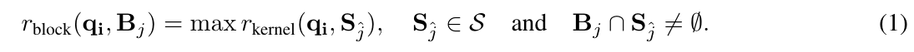
基于相关性分数 \(r_{block}(q_{i}, B_{j})\)，InfLLM v2 选择相关性最高的 \(k\) 个块。随后，计算 query token \(q_{i}\) 与这些选中块内所有 token 的 attention，得到最终输出 \(o_{i}\)。
值得注意的是，考虑到初始 token 和局部窗口内 token 通常对最终输出贡献很大，InfLLM v2 将每个 \(q_{i}\) 与初始 key-value 块 \(B_{0}\) 及局部窗口块的相关性分数设为无穷大。这确保每个 query token 都能关注初始块和局部窗口内的块。当文本较短、长度未超过 \(k\) 个块的总长度时，InfLLM v2 退化为普通稠密 attention 机制。
Top-K 块共享。当前 LLM 架构通常采用 GQA 层，多个 query 共享一个 key-value head。在 InfLLM v2 中，我们要求同组 query head 共享相同的 top-k 相关块，尽可能减少内存访问。具体而言，在每个 query head 计算与语义核的相关性分数之后，我们对组内分数取平均，并将该平均值作为 query 组的相关性分数。
高效 Top-K 实现。Top-K 选择包含三个连续步骤：1）计算 query token 与每个语义核的相关性分数，然后进行 softmax 归一化；2）沿 query 组维度聚合每个语义核的相关性分数；3）根据聚合分数，为每个 query token 选择 top-K 上下文块。这一操作构成稀疏 attention 机制的计算瓶颈。
传统稠密 attention 机制通常采用 FlashAttention 算法（Dao et al., 2022），减少内存使用并加速 attention 计算。具体而言，FlashAttention 利用在线 softmax，在 attention 计算中尽量减少 HBM 访问。但 Top-K 选择与 attention 计算存在根本差异，因为它需要每个 query 组与每个语义核之间相关性分数的精确数值。由于相关性计算、softmax 归一化以及沿 query 组维度的分数聚合不满足交换律，无法使用在线 softmax。因此，Top-K 选择需要对语义核进行两遍内存访问与计算：第一遍计算 LogSumExp（LSE），第二遍计算最终相关性分数。
Top-K 选择是 InfLLM v2 处理长上下文的瓶颈。为降低计算成本，我们提出高效 LSE 近似方法。我们不计算 query token 与所有语义核的点积结果，而是尝试引入粗粒度语义核来近似 LSE 值，其核大小 \(s_{c}\) 远大于 \(s\)。随后计算 query token 与粗粒度语义核相关性分数的 LSE。该方法的计算和内存访问成本仅为原方法的 \(s/s_{c}\)。
随着需要长上下文处理和深度推理能力的应用不断发展，可训练稀疏 attention 机制展现出提升预训练与推理效率的巨大潜力。本节讨论 InfLLM v2 的若干关键特性与设计原则。我们希望这些讨论推动可训练稀疏 attention 机制的后续发展。
复杂度分析。InfLLM v2 使每个 token 只与 top-k key-value 块计算 attention，显著降低 attention 机制的计算与内存访问开销。本段分析 InfLLM v2 的计算和内存访问复杂度。在阶段 1，我们需要计算 query token 与每个语义核的相关性分数。对于上下文长度为 \(l\) 的 query token，共有 \(\lfloor l/s\rfloor\) 个语义核。因此，该 query token 需要 \(\lfloor l/s\rfloor\) 次向量乘法和内存访问。在阶段 2，需要计算 query token 与 \(k\) 个 key-value 块的相关性分数。在这一过程中，query token 需要 \(2km\) 次向量乘法和内存访问。与需要 \(2l\) 次向量运算和内存访问的稠密 attention 相比，当序列很长（\(l \gg m\)）时，InfLLM v2 可以将计算开销和内存访问降至 \(1/s\)。可以看到，阶段 1 的计算复杂度仍为 \(O(l^{2})\)，而阶段 2 为 \(O(l)\)。因此，要进一步提高稀疏 attention 效率，应投入更多精力研究相关块检索。
query 与 key-value token 使用不同粒度。在 InfLLM v2 中，我们允许每个 query token 与不同 key-value 块计算 attention。query 的计算单元是 token 级，key-value 的计算单元是块级。许多以往的稀疏 attention 方法（Xu et al., 2025; Zhang et al., 2025a）也将 query 序列分块，同块内所有 query token 共享相同的 top-k key-value 块。然而，query 分块只能加速长序列 prefill，无法加快 decoding，因为 decoding 需要逐 token 生成，而且大多数情况下 query token 无法形成完整块。因此，训练时对 query 采用块级单元会导致 decoding 时训练与推理不一致，进而降低模型性能。
可训练上下文选择。在稀疏 attention 机制中，top-k 选择不可微。这意味着语义核表示无法通过阶段 2 的稀疏 attention 计算来优化。因此，InfLLM v2 选择无参数的均值池化操作构建语义核表示。此外，均值池化可以确保语义核表示与 token 级 key 向量保持在同一语义空间。这样，我们可以通过优化 token 级 key 向量，间接优化语义核表示。NSA（Yuan et al., 2025）采用压缩 attention 机制，将上下文选择的输出加入 attention 输出，使块表示能够得到优化。但这一操作为短文本带来明显开销。相比之下，InfLLM v2 的均值池化不影响短文本效率，具有更大的实用价值。
超参数建议。稀疏 attention 机制的高效训练和推理需要算法设计与算子设计高度协同。因此，从算法有效性和硬件约束角度看，InfLLM v2 的超参数设计需要满足一定的（接下页）
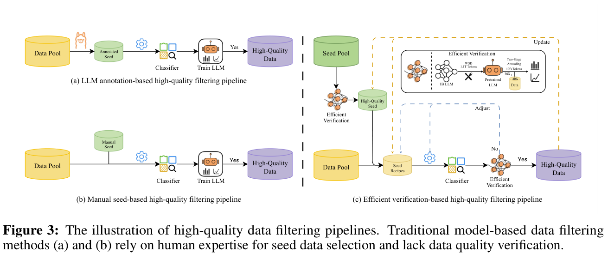
条件。在语义核大小的选择上，较小的核能更精确地计算相关性分数，但也带来更大计算开销。因此，为在有效性和效率之间取得良好平衡，我们将核大小设为 32，步长设为 16。受 GPU tensor core 的矩阵乘法累加指令约束，一个 query 组必须至少包含 16 个 head，才能确保硬件得到充分利用。
随着 LLM 快速发展，数据质量已成为提升模型性能的关键因素之一。因此，为提升 MiniCPM4 的能力密度，我们开展大量数据工程，包括从海量互联网来源筛选高质量知识密集型数据，以及利用现有 LLM 生成高质量推理密集型数据。具体而言，我们提出高效预训练筛选技术 UltraClean，基于这一技术，仅用 8 万亿 token 就能达到与使用 36 万亿 token 训练的 Qwen3-8B 相当的性能。
随着 LLM 快速发展，数据质量成为提升模型性能的关键因素之一。利用基于模型的分类器筛选数据、提取高质量知识密集型样本，不仅能提高模型效果，还能以更少 token 获得更好性能，从而降低训练成本。但当前方法仍面临两个主要挑战：（1）缺乏高效的数据验证策略，难以及时反馈数据质量；（2）用于训练分类器的种子数据选择缺乏明确标准，高度依赖人工经验，引入主观偏差。为解决这些问题，我们提出高效数据验证策略，以极低计算成本快速评估数据对 LLM 训练的实际影响。在此基础上，基于高质量种子数据有助于提升模型性能的假设，我们优化正负样本选择过程，构建高效数据筛选流程。我们的方法获得更稳健、质量更高的知识密集型分类器，同时显著提升预训练数据整体质量。
整体流程。整体流程如图 3(c) 所示。首先，我们应用高效验证策略评估初始候选种子样本池，将显著提升训练性能的高质量数据选为分类器训练的正例种子。同时，从原始数据池随机抽取负例，构建均衡训练集。为更高效地评估分类器的实际效果，我们还使用高效验证策略评估其筛选结果。根据验证反馈，迭代更新高质量种子池，动态调整正负样本比例，并微调分类器训练超参数，持续优化数据筛选策略。只有在高效验证中表现稳定可靠的分类器，才用于大规模数据筛选及后续（接下页）
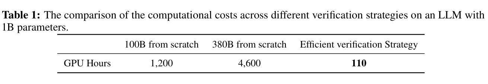
模型训练。需要强调的是，最终的高质量分类器应用于整个网络规模的预训练数据集，提取高质量知识密集型训练样本，从根本上提高大规模模型训练的效率和效果。
高效验证策略。在有限 token 预算下，LLM 训练中的性能差异往往达不到统计显著性，而训练过程固有的不稳定性进一步削弱验证结果的可靠性。有效验证预训练数据通常至少需要 100B token。如表 1 所示，在 1B 参数 LLM 上训练 100B token 约需 1,200 GPU 小时，相当于 64 张 GPU 连续运行近 19 小时。如此高的计算成本使高质量数据分类器迭代开发中的高效验证难以实现。为此，我们受 Llama 3.1（Dubey et al., 2024）设计启发，提出高效验证策略。具体而言，我们使用 WSD 调度器（Hu et al., 2024）预训练一个 1B 参数 LLM，总计覆盖 1.1 万亿（T）token。其中稳定训练阶段为 1T token，衰减阶段再使用 0.1T token。在此基础上，我们引入两阶段退火训练过程，在 10B token 上微调，其中 30% 数据留给验证，其余 70% 按默认混合数据比例组成。相比完整训练的 1,200 GPU 小时成本，该策略将训练时间降至约 110 小时（即 32 张 GPU 上不到 3.5 小时），显著降低计算需求，并大幅提升数据筛选流程的效率与可迭代性。我们采用原始混合数据比例的两阶段退火训练作为对照基线。这一验证策略能够基于多个指标高效评估候选数据对模型训练的影响，兼顾准确性与成本效益，为数据选择提供实用的闭环优化路径。
分类器训练方案。当前分类器训练的正例种子样本选择主要依赖 LLM 评分或人工整理。但前者容易受到 LLM 固有偏差影响，可能引入系统性噪声与标注痕迹；后者高度依赖人工经验，缺乏对种子数据有效性的严格评估。此外，人工选择的可靠性往往通过使用筛选数据训练的 LLM 的下游性能来间接判断，令验证过程既昂贵又间接。这些局限阻碍分类器在不同任务中的适应性和泛化能力。为此，我们提出核心假设：能够提升 LLM 性能的高质量种子数据，也应有益于训练能够识别高质量训练样本的分类器。如图 3(c) 所示，我们首先对初始候选种子样本池应用高效验证策略，选择在 LLM 训练中带来显著性能收益的样本，作为分类器训练正例。我们评估大量候选种子，最终整理出经过实证验证的高质量正例集合，包括：LLM 评分高于 4 的高质量领域内数据、指令格式数据集（如 OH-2.5 和 ELI5）、真实教育材料、LLM 合成的教科书风格内容，以及经过整理的高质量网页数据。这一过程不仅确保正例整体质量，还显著提升筛选效率，为分类器训练奠定坚实基础。为增强分类器鲁棒性，我们使用不同来源的原始数据构建负例。英文负例来自 FineWeb、C4、Dolma、The Pile 和 RedPajama，中文负例包括 CCI3、ChineseWebtext 和其他主流语料。实验进一步表明，为负例引入多样化数据来源，显著提升分类器泛化能力与跨领域适应性。初始训练后，我们采用迭代训练机制：将当前分类器版本推断出的正负样本用作下一轮新训练数据，持续优化分类器性能。通过这一迭代过程，我们进一步提高分类器在大规模数据筛选任务中的精确性与稳定性。
基于 fastText 的质量筛选。当前高质量数据分类器大体分为基于 LLM 的方法（Penedo et al., 2024; Yu et al., 2025b）和基于 fastText 的方法（Li et al., 2024b; Shao et al., 2024b）。基于 LLM 的分类器通常性能较强，但推理成本明显更高。为此，我们采用基于 fastText 的分类器，在特定条件下保持有竞争力的性能，同时大幅降低推理开销。这不仅尽量减少资源消耗，还加快数据筛选实验的迭代周期。
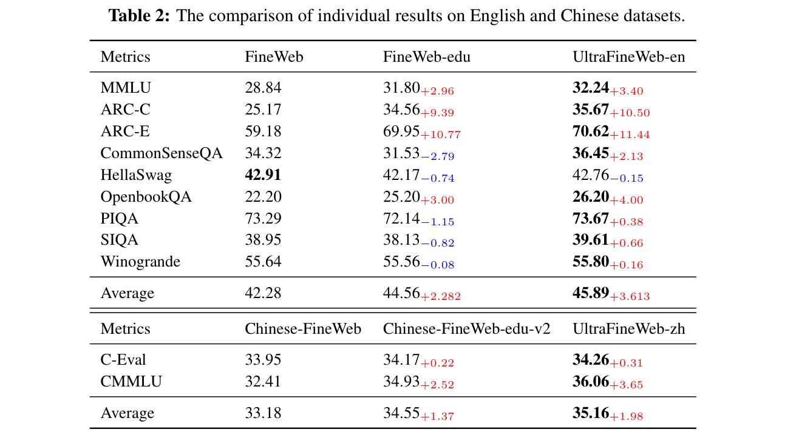
例如，使用基于 LLM 的分类器处理 15 万亿（15T）token，大约需要在 GPU 上运行 6,000 小时；fastText 则能在无 GPU 服务器上使用 80 个 CPU，在不到 1,000 小时内完成同一任务，效率提升显著。值得注意的是，我们的大多数大规模实验都在分布式 Spark 集群1上开展。数据预处理阶段，我们执行一系列必要步骤，包括删除冗余空行与过多空白、移除变音符号，以及将英文文本统一为小写。我们使用 DeepSeek-V2（Liu et al., 2024a）的 tokenizer，其效果优于传统分词方法（如英文按空格分词、中文使用 Jieba2）。同时保留 \\(n\)、\\(t\)、\\(r\) 等结构 token。训练时，fastText 分类器超参数设置如下：向量维度 256，学习率 0.1，最大 \(n\)-gram 长度 3，最小词频 5，训练轮数 3。推理时采用默认分类阈值 0.5，简化流程、确保各实验一致，避免额外超参数调优。推理时采用默认分类阈值 0.5，简化流程、确保各实验一致，避免额外超参数调优。
译注：上一段最后一句在原文中重复出现，此处按原文保留。
结果与分析。实验使用 MiniCPM-1.2B 模型架构和 MiniCPM3-4B tokenizer。每项实验训练约 100B token。我们采用 Lighteval 库（Fourrier et al., 2023）评估模型，与 FineWeb（Penedo et al., 2024）和 CCI3-HQ（Wang et al., 2024a）的设置一致。所有评估指标均基于零样本设置。
如表 2 所示，在英文指标上，UltraFineWeb-en 在 MMLU、ARC-C、ARC-E、CommonSenseQA 和 OpenBookQA 等多项任务中取得显著性能提升。具体而言，UltraFineWeb 在这些任务上优于 FineWeb；只有 HellaSwag 比 FineWeb 略低 0.15 个百分点（pp），但比 FineWeb-edu 高 0.6pp。UltraFineWeb-en 的英文平均分（45.891pp）比 FineWeb（42.287pp）高 3.61pp，比 FineWeb-edu（44.560pp）高 1.3pp。在中文指标上，UltraFineWeb-zh 在 C-Eval 和 CMMLU 上同样优于 FineWeb-zh 和 FineWeb-edu-zh。具体而言，UltraFineWeb-zh 在 C-Eval 和 CMMLU 上，相较 Chinese FineWeb 和 Chinese FineWeb-edu-v2 分别提升 0.31pp 和 3.65pp，而与 FineWeb-edu-zh 相比分别提升 0.09pp 和 0.13pp。UltraFineWeb-zh 的中文平均分相较 FineWeb-zh 和 FineWeb-edu-zh 分别提高 1.98pp 和 0.61pp。这些结果表明，我们提出的高质量数据筛选流程显著提升数据质量，进而显著提升模型性能。
译注：原文中文指标对照名称的表述与表 2 不完全一致，以上保留原句；表中 CMMLU 的 3.65pp 对应相较 Chinese-FineWeb 的提升。
1 https://spark.apache.org/
2 https://pypi.org/project/jieba/
在构建高性能 LLM 的预训练过程中，推理能力被广泛视为通用智能的核心指标之一。这种能力的发展，在很大程度上依赖预训练数据的质量、结构和知识密度。然而，当前典型预训练语料，如 Common Crawl 和大规模网页抓取数据集，在支持复杂推理技能方面仍面临重大挑战。具体而言，现有语料普遍存在两个核心问题：（1）虽然网页数据语言形式多样、覆盖广泛，但大量内容由广告、模板文本、浅层对话和各种冗余信息组成。这些内容通常知识密度低、逻辑结构弱。即使用高质量数据分类器筛选，提取内容也往往缺乏准确推理链与系统知识组织，令模型难以获得可迁移的思维模式和推理范式。（2）当前数据构建过程存在明显的规模与深度权衡。LLM 训练语料为追求广泛覆盖和多样性，高度依赖信息密度低的长尾内容。相比之下，教科书、学术材料和系统性解释内容等真正结构化且知识丰富的文本，只占很小比例。这种不均衡的数据结构限制模型学习深层语义关系和复杂逻辑结构的能力。因此，模型虽然能生成流畅语言，但推理往往缺乏深度，甚至在推理密集型任务中产生幻觉。
为应对这些挑战，我们提出高质量推理密集型数据生成流程，以提升推理能力。这一面向任务且训练高效的流程，整合种子数据选择与结构化数据整理、生成。通过多轮迭代，逐步构建知识密度高、结构清晰、逻辑连贯且语言多样的预训练数据。这不仅改善模型在通用基准上的性能，还从基础能力层面增强推理迁移性与泛化能力。
种子数据选择。种子选择围绕两个核心目标：高知识密度与领域多样性。一方面，我们利用基于 UltraFineWeb 数据集构建的高质量数据分类器，从大规模网页语料中筛出知识密集、逻辑完整、结构良好的内容，作为通用领域的高质量种子数据。这些数据片段上下文连贯性强、概念丰富，为合成模型提供结构化语言模板与知识表达。另一方面，为支持更高阶的领域专用推理能力，我们针对数学、编程和自然科学等关键领域开展人工整理，选择高质量开源网页内容、教科书和问答材料作为领域专用种子。这些资源通常表达高度结构化，知识组织清晰。结合自动筛选与人工整理，我们构建兼顾通用性和专业性的种子池，为后续推理密集型数据生成奠定坚实基础。
结构化数据整理与生成。为有效提升知识密度与推理能力，我们设计以结构清晰、语义丰富和逻辑递进为核心的结构化数据整理与生成机制。传统网页语料的信息往往碎片化且缺乏结构。为此，我们采用结构优先原则，使用参数量低于 10B 的开源 LLM 自动编辑和重组网页文本。关键操作包括去噪清洗、语义整合和逻辑补全，产出形式良好、逻辑连贯、层次分明的中短篇段落。
此外，基于高质量开源网页语料、教科书和问答材料，我们抽象出两种典型知识构建范式（教科书和论坛），并开发相应合成策略。教科书范式强调系统性与递进性，构建由知识点、多轮解释、总结和练习题组成的层次结构。论坛范式通过围绕中心主题生成多轮问答与观点辩论，模拟真实用户讨论，提高多样性和真实性。这些生成方法既保持高知识密度，也为模型提供多种推理路径和认知框架，有助于发展泛化能力更强、具备批判性思维的语言模型。
值得注意的是，构建的数据会回流原始种子池，用于后续多轮演化生成。这使数据生成过程具有自我增强特性，通过多轮迭代演化逐步构建更丰富、更深入的高质量推理语料，为模型提供持续优化的训练信号和更稳健的认知支撑结构。
我们系统介绍了 MiniCPM4 预训练中使用的高质量数据构建策略，涵盖高质量知识密集型数据筛选和推理密集型数据生成。通过自动筛选与结构化生成，在不增加、某些情况下甚至减少训练 token 的情况下，显著提升语料的知识密度与逻辑复杂性。实验表明，这一策略在一系列下游任务上取得与全规模语料训练模型相当、甚至更好的性能。尤其在知识密集型和推理密集型任务中，优化数据更有效地增强模型通用能力与知识迁移能力，进一步验证数据质量优于数据数量这一原则。
尽管结果有希望，仍有若干开放问题值得探索。首先，当前数据筛选与生成流程仍部分依赖人工设计的启发式规则。利用 LLM 能力构建数据质量评估和结构优化的自监督机制，是同时提升效率与质量的关键方向。其次，在演化生成中平衡语料多样性与任务相关性仍有挑战，需要更细粒度反馈机制来防止语义模式坍缩。最后，将这一策略拓展至多语言、跨任务乃至多模态设置，是构建下一代高性能基础模型的关键一步。
训练 LLM 需要巨大的计算成本，因此，在尽量降低计算资源消耗的同时最大化性能，是一项关键挑战。在先前工作（Hu et al., 2024）中，我们基于可预测扩展技术构建 ModelTunnel，能够在小模型上搜索训练策略，再迁移至大模型训练，降低确定大模型最优训练配置的实验成本。在 MiniCPM4 训练中，我们复用 ModelTunnel 相关配置，并开发 ModelTunnel v2，提高搜索精度，系统验证 µP 的有效性。此外，为增强训练效率，我们在预训练目标和基础设施两方面实施工程优化。接下来详细介绍这些针对 MiniCPM4 预训练的改进。
随着模型参数规模持续增长，训练实验成本相应上升，单次模型训练需要数十万 GPU 小时。这使网格搜索等传统训练配置搜索方法越来越不可行。在 MiniCPM-1 中，我们系统构建 ModelTunnel，在仅有数百万参数的模型上开展大量实验，确定最优超参数。构建 MiniCPM4 时，我们在以下方面改进：
1）更合理的性能指标。在 MiniCPM-1 中，我们用模型在开源预训练语料上的语言模型损失作为性能指标，假设较低损失代表更好的模型性能。但开源预训练数据集上的损失无法准确反映下游任务性能。因此，我们构建 ScalingBench，并建立其损失与下游任务性能的关系（Xiao et al., 2024a）。
由于“风洞”中训练的大多数模型参数和训练数据都非常有限，它们在下游任务上往往无法表现出超越随机水平的性能，因此直接评估风洞小模型的下游性能不可靠。于是，我们尝试构建一个评估数据集，使其损失通过函数映射与下游任务性能良好相关。为此，我们使用下游任务验证集构建 ScalingBench。在原始下游数据集中，每个实例包含用户指令和人工标注标签，标签通常只有几个词。在 ScalingBench 中，我们使用 GPT-4o（OpenAI, 2023）为所有测试实例生成推理步骤。随后直接计算推理步骤与标签的条件损失，即给定任务输入时模型生成答案所产生的损失。这一损失可以作为合理性能指标。
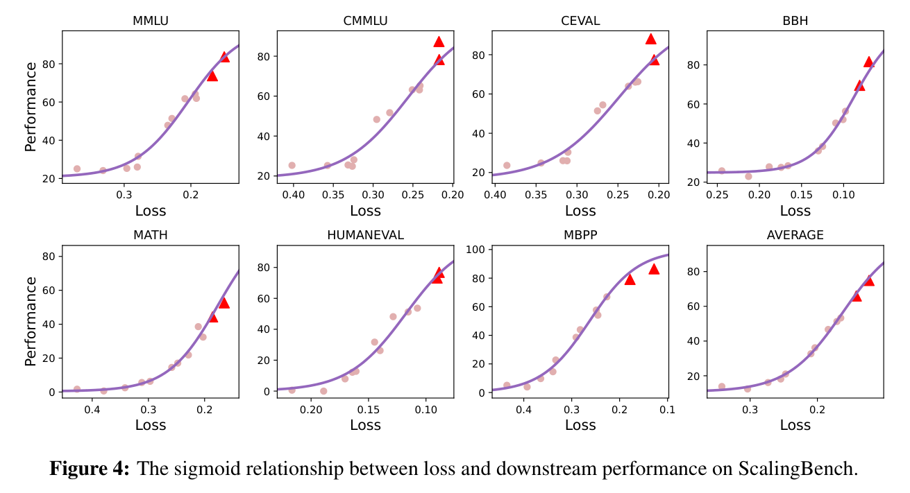
为验证 ScalingBench 的有效性并建立损失与下游性能的关系，我们评估多个模型在 ScalingBench 上的损失和性能。这些模型由团队在不同阶段训练，使用相同词表，因此损失具有可比性。参数规模从 0.36B 到 4B，训练数据来源与规模各不相同。所有模型在 ScalingBench 上都呈现相同趋势：ScalingBench 损失与下游性能之间存在 sigmoid 函数关系。如图 4 所示，红色三角形代表未参与函数拟合的 7B 和 80B 参数模型，作为曲线测试点。它们的 ScalingBench 分数与相应任务性能也符合 sigmoid 关系。这表明我们构建的 ScalingBench 有效建立损失与下游任务性能的关系，其损失是非常有效的性能指标。
2）µP 与普通架构的比较。利用可预测扩展搜索超参数，是降低实验成本、最大化模型性能的重要路径。这一方向近期受到广泛关注，相关研究大体分为两类：架构驱动的超参数迁移（Yang et al., 2022; Everett et al., 2024; Lingle, 2024; Bordelon et al., 2023），以及数据驱动的超参数迁移（Kaplan et al., 2020; Bjorck et al., 2024; Li et al., 2025a）。前者修改模型计算过程，确保小模型与大模型能够共享超参数设置；后者通过分析超参数与模型参数规模的关系，确定 LLM 的最优超参数配置。在 MiniCPM 系列模型中，我们采用 µP（Yang et al., 2022）作为基础架构，假设在特定约束下，学习率等超参数可在不同模型规模间迁移。大多数现有开源模型则使用数据驱动方法搜索超参数。
在 MiniCPM4 中，我们比较 µP 架构与普通模型形式。近期提出多种超参数搜索方法，其中 StepLaw（Li et al., 2025a）是值得关注的方法。然而，我们分析发现，原始 StepLaw 研究的实验配置与实际训练需求存在明显差异。考虑到 StepLaw 与 µP 对超参数优化的潜在收益，我们希望在具体训练场景中系统评估两者相对性能，为此设计了全面比较研究。
实验首先用 StepLaw 计算预测超参数，重点预测 batch size 与学习率。随后通过最近邻量化选择 batch size：取最接近 StepLaw 预测值、且能被 16 整除的数，确保计算效率。我们比较两种训练配置：不使用 µP 的标准架构，采用 StepLaw 预测学习率；以及 µP 架构，使用经验优化的学习率参数。我们用训练损失指标和 ScalingBench 评估两个训练模型，在具体训练场景中全面考察两种方法的有效性。
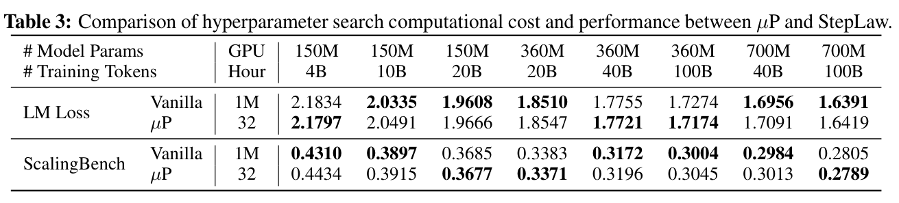
如表 3 所示，StepLaw 略多地表现出优势，但两种方法在损失和 ScalingBench 分数上的差异都很小，均未表现出持续稳定的优越性。在我们的实验条件下，µP 框架的超参数搜索与 StepLaw 效果相当，我们将其归因于以下因素：1）实际硬件约束使我们无法严格遵守 StepLaw 规定的 batch size；2）实验采用 WSD 学习率调度，稳定与衰减阶段使用不同数据分配，而 StepLaw 实验采用余弦衰减；3）我们用 ScalingBench 评估模型，而 StepLaw 拟合依赖训练损失。此外，训练过程和评估指标都存在随机性。我们还注意到，复现 StepLaw 工作成本很高，而 µP 搜索仅需很少 GPU 小时，普通研究者也能使用。总之，我们认为 µP 结合超参数搜索方法，能在新实验中使用真实训练配置和数据，进行低成本超参数搜索。StepLaw 在有许多变化的实验环境中仍表现强劲，许多情况下可作为参数搜索方法的比较标准。
为提高模型训练效率，受 DeepSeek et al.（2024）启发，我们采用 MTP（Gloeckle et al., 2024）作为训练目标，引入更密集监督信号，提高数据效率。在训练基础设施方面，我们实现 FP8 混合精度计算框架。
MTP。传统 LLM 预训练通常采用下一 token 预测目标，要求模型基于前序上下文预测下一个 token。MTP 要求模型通过额外预测头输出多个 token。这里，额外预测头是单层 Transformer（Vaswani et al., 2017），其 embedding 层和输出头与主模型共享。具体而言，给定输入 token \(\{x_{0}, x_{1}, \ldots , x_{l}-_{1}\}\)，主模型生成隐藏向量序列 \(H = \{h_{0}, h_{1}, \ldots , h_{l}-_{1}\}\)。下一 token 预测目标计算如下：
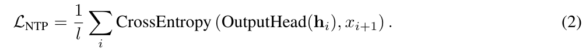
额外预测头的输入为隐藏向量与下一 token 的 embedding 的拼接：
MTP 训练目标定义为：
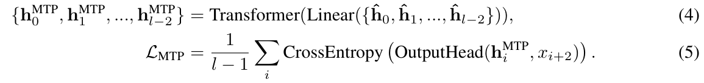
最终预训练目标为两个训练目标的加权和：\(L = L_{NTP} + \lambda L_{MTP}\)。
FP8 混合精度训练。考虑到 NVIDIA 的 Tensor Core GPU 具备强大 FP8 计算能力，我们在训练中采用 FP8 混合精度。沿用 DeepSeek et al.（2024），对参数与激活都应用在线分块 FP8 量化，参数块大小为 \(128\times 128\)，激活块大小为 \(128\times 1\)。量化后使用 FP8 矩阵乘法累加（MMA）指令，以 FP32 作为累加器精度。为避免 FP8 导致不稳定，只在线性投影中使用 FP8。具体而言，仅在前向传播的激活计算和反向传播的输入 gradient 计算中使用 FP8。由于参数对精度极其敏感，参数 gradient 采用 BF16 格式计算。
本节介绍预训练之后的大模型后训练方法，使模型利用预训练获得的世界知识来遵循用户指令。在 SFT 阶段，我们构建多样且全面的指令集合，充分激活 LLM 能力，确保强大的基础能力。为此，沿用先前工作（Ding et al., 2023），我们构建大规模 SFT 数据集 UltraChat v2，覆盖知识应用、推理、工具使用和长上下文处理等能力。
此外，为增强模型深度推理能力，我们采用长 CoT 推理增强的 SFT，并整合强化学习技术。RL 的 rollout 过程通常面临负载不均衡，导致计算效率很低。为解决这一问题，我们提出负载均衡 RL 策略——分块 rollout。
以下段落详细介绍用于增强基础能力与推理能力的 SFT 和强化学习技术。
为提升 LLM 核心能力，我们设计聚焦任务导向能力的合成数据生成框架。以关键能力维度为指导，框架生成涵盖广泛技能的高质量问答式数据，为后训练提供更有针对性、更结构化的信号。我们围绕五个关键技能领域系统开发合成数据分支：知识应用、推理、指令遵循、长上下文处理和工具使用。每个分支针对目标技能的输入输出模式与认知需求定制，提供多样、任务驱动且可迁移的训练样例。这有助于模型在关键基础能力上持续提升。
首先，我们从各学科的领域专用语料、考试大纲与教材中提取、整理知识点，构建全面且结构良好的知识框架。基于这一框架，利用 LLM 生成针对各个知识点的练习问答对，形成知识驱动问答数据集的初始阶段。为进一步提升数据多样性与泛化能力，我们对初始练习问答对采用两种演化策略：（1）指令演化，以多种方式改写提示，模拟不同提问风格与任务表述；（2）答案多样性演化，引导模型生成合理且风格多样的答案，提高模型在知识理解与表达方面的鲁棒性。
推理能力是一项基础技能，使 LLM 能够处理复杂任务，并在不同领域间泛化知识。与标准问答任务不同，推理任务要求超越事实检索：模型需要进行多步逻辑推断、整合跨上下文信息，同时保持回复连贯且结构清晰。为提升 LLM 的数学推理、逻辑建模和过程性思维能力，我们开发两个专用数据集，一个侧重数学推理，另一个侧重基于代码的推理。这些数据集旨在加强模型推理能力，支持发展更稳健、更可迁移的逻辑技能。
数学推理数据。首先，我们系统分类数学核心领域知识，包括线性代数、微积分、概率、统计、微分方程、离散数学和微分几何。再按小学到大学的教育阶段组织这些主题，建立清晰难度层次。基于这些主题，我们使用经过整理的种子数据，或直接提示 LLM 生成相关问题。随后引导模型生成答案和自我反思，提高逻辑一致性与正确性。
数学问题生成方法侧重两个维度：指令多样性和解题路径多样性。一方面，将基础问题扩展为选择题、填空题和开放题等不同形式，增强表达多样性与结构复杂性。另一方面，为同一问题生成多条有效解题路径，拓展模型探索推理空间、泛化解题策略的能力。生成过程由指令遵循、回复长度控制等启发式规则引导，确保数学有效性和答案可验证性，得到兼具教学价值与推理深度的数学数据子集。此外，我们按难度分层，在训练中主动降低简单问题比例，鼓励模型关注中高难度问题，有效增强构建推理链和处理复杂逻辑结构的能力。
代码推理数据。为增强 LLM 代码编程能力，我们设计面向真实开发场景的代码推理数据生成流程。首先，人工定义不同编码上下文、问题类别（如语义补全、bug 定位和复杂逻辑理解）及难度级别，确保构建任务贴近实际工程场景，并有明确推理目标。数据构建时，从真实 GitHub 仓库、编程挑战库或开源脚本中提取函数定义、算法片段、类结构等高质量代码片段，作为问题生成的上下文基础。利用预定义上下文和片段结构，我们用 LLM 生成上下文相关的代码推理问题，鼓励模型理解程序结构、模拟执行路径、进行多步符号推理。此外，为每个生成问题创建配套单元测试和输入输出样例，提供可执行验证信号，确保模型在训练中不仅理解代码语义，也展现出行为可验证的性能。在此基础上，将问题转为输出预测、逻辑诊断、代码改写等不同形式，并引入跨语言转换（如 Python 到 Java、C++ 到 Rust），进一步增强上下文与逻辑多样性。这不仅拓宽数据覆盖和泛化能力，也促进模型在不同语法结构与类型系统之间学习统一推理模式和程序语义，从而增强跨语言迁移性及真实开发任务适应性。
复杂指令的渐进构建。首先生成简单基础指令，通过叠加风格、格式和内容相关要求，迭代提高复杂度。这种自下而上策略支持从基础任务向更复杂任务的受控递进，令模型更好地跨指令复杂度泛化。
结果可验证的指令生成。我们构建具有明确可验证约束的指令，如长度限制、必需内容或结构要求。这些约束支持通过规则筛选自动验证模型输出。使用不同 decoding 参数生成多个输出，能够高效识别并仅保留严格满足给定条件的回复，支持可扩展且准确的数据生成。
增强指令多样性。为丰富指令集合，我们加入广泛领域与上下文的提示。受 Ge et al.（2024）方法启发，将领域专用知识与不同角色设定结合，生成覆盖更广真实应用范围的指令。
从现有数据反向生成指令。除从头生成指令外，我们也采用反向指令生成策略，将已有高质量文本视为目标输出，生成可能导向这些输出的相应指令。这使我们能够利用有价值的无标注语料扩充指令遵循数据集。
受 LongAlign（Bai et al., 2024）启发，我们从现有预训练语料构建长上下文 SFT 数据。从预训练语料的网页、源代码、数学内容、百科文本等不同来源中采样文档 \(d\)。对于每个 \(d\)，使用 LLM（接下页）
生成包含 \(n\) 个任务导向查询的集合 \(Q = q_{1}, q_{2}, \ldots , q_{n}\)，涵盖提取、总结、推理和开放域问答等目标。为模拟长上下文推理，我们检索相关但可能无关的文档，构成有挑战性的长上下文输入，模拟干扰内容密集的环境。对每个 \(q_{j} \in Q\)，从建立索引的语料中检索 \(k\) 个相关文档 \(d_{j,1}, d_{j,2}, \ldots , d_{j,k}\)。随后将原始文档 \(d\) 与检索文档拼接，形成扩展上下文 \(C_{j} = Concat(d_{j,1}, \ldots , d_{j,m}-_{1}, d, d_{j,m}, \ldots , d_{j,k})\)，其中 \(d\) 插入序列中随机选择的位置 \(m \in \{1, 2, \ldots , k+1\}\)。将每个查询 \(q_{j}\) 与上下文 \(C_{j}\) 一起提示给 LLM，要求其生成答案 \(a_{j}\)。
这一设计帮助模型在相关性混合的长输入中定位相关内容并进行推理。为覆盖不同上下文长度，我们控制 \(C_{j}\) 总 token 数均匀分布在 8K 到 64K 之间。
函数调用。函数调用数据集结合 xlam-function-calling-60k（Liu et al., 2024c）和 glaive-function-calling-v23 等公开来源，以及通过上下文学习生成的大量内部数据。为确保质量，采用严格筛选标准：删除标准答案调用工具不在可用工具集内，或参数名称、类型与工具 schema 不一致的样本。此外，我们在工具调用之前加入 CoT 推理步骤。经验上，这通过引导模型更好地理解任务、选择合适工具与参数，提升模型性能。
代码解释器。为增强模型代码生成与推理能力，我们构建借助代码解释器解决问题的数据样例集合，包括经过整理的开源数据集，以及反映真实编码场景的内部数据。
对于开源数据集，使用 CodeAct（Wang et al., 2024b）和 Code-Feedback（Zheng et al., 2024）等资源。为确保与执行环境兼容，预处理时分析每段代码的抽象语法树（AST），筛除导入外部包或依赖用户交互的片段。
对于内部数据，收集 CSV、PDF、图像、视频等各类文件，提示 LLM 生成与文件内容相关、真实且可用代码解决的问题。再要求模型使用代码解释器解决任务，允许其在沙箱中迭代生成、执行代码。每次执行后，将结果反馈给模型。若模型 10 次尝试内未能解决问题，则丢弃该数据点。这种方法创建反馈驱动样例，教会模型更有效地使用代码解决真实任务。
近期研究表明，RL 能增强 LLM 深度推理能力（OpenAI, 2024b; DeepSeek et al., 2025）。但直接对端侧基础模型应用 RL，往往训练不稳定、收敛缓慢。因此，首先使用长 CoT 蒸馏数据对基础模型进行 SFT，使其具备基本推理能力，并为 RL 提供更好初始化。随后进行 RL，进一步提升性能。为提高训练效率，我们精心整理训练数据，并引入分块 rollout 策略，通过优化 GPU 利用率、尽量减少计算浪费，显著加速 RL 过程。
我们收集大量高质量数学与编程数据，增强模型推理能力。我们发现，数据质量和难度对提升推理能力发挥重要作用。
3 https://huggingface.co/datasets/glaiveai/glaive-function-calling-v2
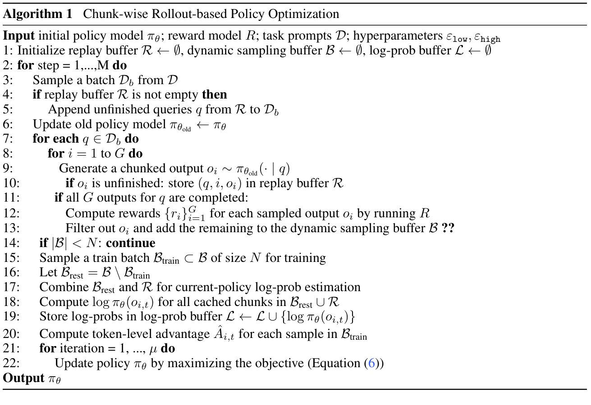
译注：算法标题为“算法 1：基于分块 rollout 的策略优化”；算法第 13 行原文末尾有“??”，按原样保留。
数学。我们主要从 DAPO、Deepscaler、Numina、Prime 等来源收集可验证数学数据。评估阶段，不符合预期推理格式的输出奖励为零。为判断正确性，我们结合基于规则的匹配和 SymPy 符号验证。
代码。代码相关数据主要来自 LeetCode、TACO、Kodcode、Codeforces 等平台。我们在 Firejail 沙箱环境4中执行 Python 代码。对于多测试用例问题，奖励按通过测试用例的比例计算；全部通过则奖励为 1.0。
数据筛选。收集数据后，使用 Semhash（van Dongen & Tulkens, 2025）对 RL 训练数据和 SFT 数据去重。为保留更有挑战性的样本，用 DeepSeek-R1-Distill-Qwen-1.5B 为每个训练样例生成四次预测，筛除四次全部正确的样本。由于代码数据明显少于数学数据，我们多次上采样高质量代码样本，提高其训练集占比。
基于研究社区近期进展，我们采用修改版 GRPO（Shao et al., 2024b）。在原始 GRPO 算法基础上，加入以下改进：
动态采样。RL rollout 阶段，筛除回复全部正确或全部错误的提示，确保 batch 中所有提示都贡献有效 gradient，同时保持一致 batch size。这缓解 gradient 高方差，提高训练效率和稳定性。
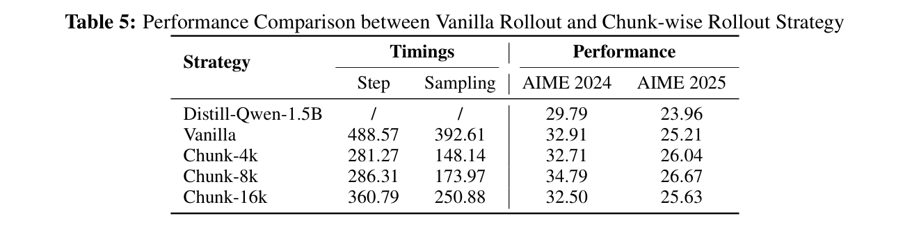
Clip-Higher 策略。我们提高重要性采样比率的裁剪上界。这缓解训练后期熵坍缩，并鼓励更广泛探索，帮助模型发挥全部潜力。
Token 级策略 gradient 损失。我们在 token 级计算损失，取代样本级平均损失。这使长序列在 gradient 更新中按比例获得更高权重，促进模型学习复杂推理模式，并抑制冗长、重复等不良行为，最终提高训练稳定性与生成质量。
过长样本筛除。因长度约束而截断的回复不参与损失计算。这避免惩罚被提前截断的有效推理轨迹，从而鼓励更深入推理。
为缓解 rollout 中长轨迹导致的推理吞吐下降，我们提出分块 rollout 策略，最大化计算资源利用。流程有三步：（1）策略模型为所有输入样本生成固定块长度的轨迹；（2）已完整结束或达到最大生成长度的轨迹用于训练，未完成轨迹的对数概率被计算并存储，供后续重要性采样使用；（3）将未完成轨迹与下一批新输入合并，返回步骤（1）。该策略显著提升 GPU 利用率，有效减少单次 rollout 迭代中过长输出造成的计算浪费。完整算法见算法 4。
译注：原文此处引用“算法 4”，本 PDF 对应流程列为第 20 页“算法 1”。
分块 rollout 将长回复拆成跨迭代的小块，因此策略模型更新后，partial rollout 可能发生分布偏移，影响训练稳定性。为应对此挑战、确保训练更稳定，我们引入以下技术：
块级重要性采样。分块 rollout 轨迹跨越多个策略模型版本，因此我们在块级应用重要性采样，考虑分布差异。每块根据生成它的策略独立加权。我们发现，这对稳定高效的策略优化至关重要。
Dual-clip。分块策略引入部分 off-policy rollout，rollout 的高方差往往导致训练 loss spike。为缓解这一问题，引入 dual-clip（Ye et al., 2020），从两个方向约束策略更新范围，有效减少轨迹分布大幅差异带来的不稳定。
动态更新参考模型的 KL 正则化。与近期移除 KL 损失的工作（Yu et al., 2025a; Xia et al., 2025）不同，我们发现保留 KL 惩罚对于分块 rollout 稳定训练必不可少。为避免过度限制策略模型潜力，定期更新参考模型，平衡训练稳定性与模型性能。
乱码过滤。分块 rollout 复用先前策略模型的未完成轨迹，增加生成损坏或不连贯文本（如乱码、过度重复）的风险。为防止异常轨迹破坏训练稳定性，我们引入乱码过滤器，检测这些样本并将其排除于损失计算之外。
基于上述技术，对每个具体问答对 (q, a)，行为策略 \(\pi _{\theta old}\) 采样一组 \(G\) 个独立回复 \(\{o_{i}\}^{G}_{i=1}\)。我们重新构造原始策略优化目标，以支持所提出的分块 rollout。修改后的目标形式化定义如下：
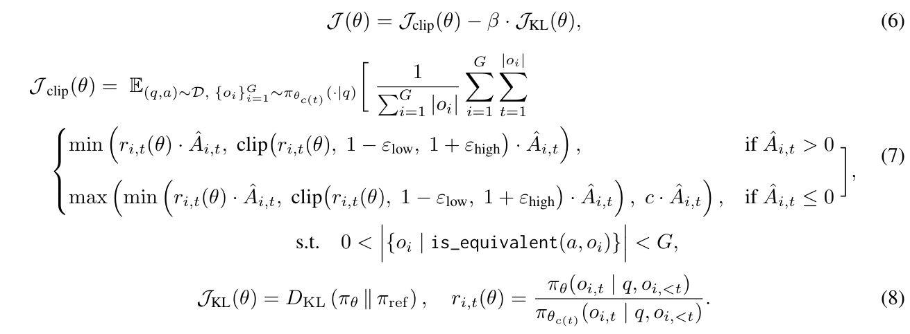
我们在 DAPO 数据集上训练 DeepSeek-R1-Distill-Qwen-1.5B 150 步，评估分块 rollout 策略。实验在 64 张 A800 GPU 上进行，batch size 为 64，学习率 \(3\times 10^{-6}\)。训练时，每个样本 rollout 数为 8。评估报告 16 次独立运行的平均性能。结果见表 5。“Naive”表示 rollout 阶段为每个查询生成完整回复；“Chunk-nk”表示分块 rollout，每次 rollout 为每个输入最多生成 nk 个 token。“step”和“sampling”分别表示每训练步平均时间及每步 rollout 的平均时间。所有计时值均相对于朴素动态采样基线归一化。
结果表明，分块 rollout 在维持性能的同时，有效降低每步训练和采样时间。块大小减小时，每步采样时间持续下降，证实该策略缓解采样中长轨迹造成的空泡，提高 GPU 利用率。但块大小从 8k 减至 4k 时，虽然每步采样时间明显下降，总训练时间基本不变。这是因为较小块在缓解采样瓶颈的同时，为块级重要性采样引入更频繁的对数概率计算，因此整体训练效率改善有限。未来将进一步优化这一权衡，在采样速度和对数概率计算之间取得更好平衡。
训练 batch size 设为 256，mini-batch size 为 128。全程采用恒定学习率 \(1e-5\)。为适应 MiniCPM4 架构，采用 µP 学习率策略。与近期移除 KL 惩罚、on-policy 损失中引入熵约束的方法不同，我们保留系数为 0.001 的 KL 惩罚，并移除熵约束，确保训练稳定。最大回复长度为 32,768 token，支持延长的 CoT 推理。Rollout 阶段 temperature 和 top-p 均设为 1.0，鼓励更广泛探索。每个查询生成 16 个 rollout，促进多样性与鲁棒性。
LLM 计算与内存需求高，部署具有挑战。模型量化通过降低参数精度应对此挑战，实现资源消耗更低的高效推理。极低比特量化（如 1-bit、2-bit）近期受到广泛关注，并展现很大潜力（Wang et al., 2023; Ma et al., 2024; Xu et al.）。但构建极低比特 LLM 时，PTQ 方法（Frantar et al., 2023）可能不足以维持性能，（接下页）
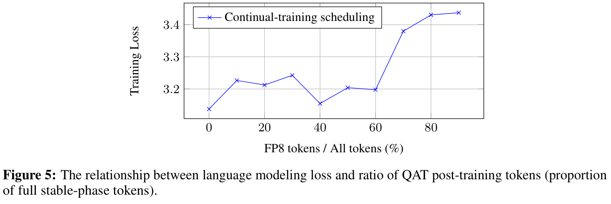
因而需要更有效的 QAT 方法（Liu et al., 2024b）。近期一些工作，如 BitNet（Ma et al., 2025），甚至从头训练极低比特 LLM。本文引入高效 QAT 方法，构建有效三值模型 BitCPM4，并展示高精度 LLM 转换为极低比特版本的可行性。这意味着可以大幅降低 QAT 中量化与反量化造成的额外开销。
主流量化方法通常同时量化权重与激活。初步实验表明，对于极低比特量化 LLM，量化激活会增加 QAT 开销，却不能在端侧设备上大幅降低推理成本。因此，我们对模型权重应用三值量化，而不量化激活。当前最先进的三值 LLM BitNet-2B（Ma et al., 2025）在 4T token 上从头进行 QAT，性能令人印象深刻。相比之下，我们用预训练高精度 checkpoint 初始化三值模型，减少 QAT 所需训练 token。
为验证对高精度 checkpoint 初始化模型应用 QAT 的可行性，首先在 ModelTunnel 中对 5M 参数模型开展初步实验，总共使用 2B（400N）token。实验采用完整 WSD 学习率调度，warmup 与稳定阶段合计占 80% token，衰减占其余 20%。初步实验包含两个训练阶段：先训练 FP8 模型，再通过 QAT 转换为三值模型。ModelTunnel 中充分实验表明，在第二阶段开始时重新 warmup 学习率，对维持 FP8 模型性能至关重要。因此，第一阶段学习率 1e-2，第二阶段 5e-3。保持总训练 token 不变，调整 FP8 训练与 QAT 阶段的分配比例，记录各配置最终收敛损失。
如图 5 所示，当 QAT token 占总训练 token 比例超过 40%，即相当于学习率衰减阶段 token 数的两倍时，最终损失接近从头通过 QAT 训练三值模型的损失。此外，我们在 150M 参数模型上验证，结果确认合理的持续训练调度，可以达到从头 QAT 获得有效三值模型的相同效果。因此，我们构建 BitCPM4，仅使用学习率衰减阶段两倍的 token。
最终训练两种规模的三值模型：基于 MiniCPM4-0.5B 的 BitCPM4-0.5B，以及基于内部实验模型训练的 1B 参数模型。整个 QAT 过程使用 350B token。
与其他相关模型的比较见表 6。在 0.5B 参数规模，BitCPM4-0.5B 在知识相关任务（MMLU、CMMLU、C-EVAL 等）上优于 Qwen3-0.6B。在 1B 参数规模，BitCPM4-1B 与竞争的 2B 参数模型表现相近。
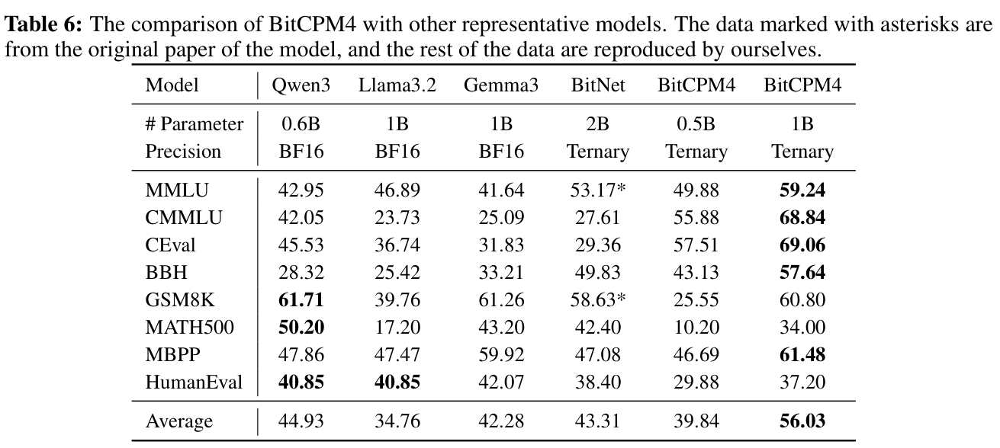
BitCPM4 所需 token 仅为 BitNet-2B 的 10%，意味着无需从头进行 QAT，也进一步表明，我们提出的 QAT 方法能以更少训练成本取得有竞争力的结果。
但 0.5B 参数模型在更具挑战性的数学和代码任务上相对较弱，我们将其归因于较小规模限制推理能力。已有量化研究指出，量化效果遵循与模型规模相关的 scaling laws（Ouyang et al., 2024; Kumar et al., 2024）。基于这一规律，未来计划将 QAT 方法应用于更大模型。此外，极低比特模型的算子也需要充分考虑，这同样是未来工作。
移动设备、个人电脑等端侧设备的计算、存储容量与功耗受到严格限制，因此，如何在有限硬件资源下实现 LLM 高效推理，成为关键技术挑战。本节介绍推理系统 CPM.cu 和部署系统 ArkInfer。
首先，我们开发针对端侧 NVIDIA 芯片优化的轻量推理框架。除静态内存管理、kernel 融合等基础功能外，实现高效投机采样，并集成 InfLLM v2 的高效稀疏 attention kernel。投机采样是加速 LLM 推理的关键技术（Leviathan et al., 2023; Chen et al., 2023; Cai et al., 2024; Li et al., 2024c），尤其适合资源受限的端侧设备。该方法采用先生成草稿、再验证的范式：轻量草稿模型生成候选 token 序列，目标 LLM 随后并行验证。投机采样近期进展，如 EAGLE-2（Li et al., 2024c），使用树状草稿生成。通过为树状投机采样设计高效 attention kernel，并实现融合验证 kernel，我们优化投机采样速度。框架中也实现了高效 InfLLM v2 稀疏 attention kernel。
基于框架，我们发现端侧模型投机采样的效率瓶颈在草稿模型的语言建模头。为此提出 FR-Spec（Zhao et al., 2025），按 token 频率裁剪草稿模型词表，同时保留目标模型完整词表，维持生成质量。进一步探索将投机采样与 4-bit GPTQ（Frantar et al., 2023）量化模型结合。为保持性能，先探索改进量化方案 P-GPTQ，再在 SpecMQuant（Zhang et al., 2025b）中验证投机采样与量化结合的可行性，以及与长上下文处理结合的可行性。
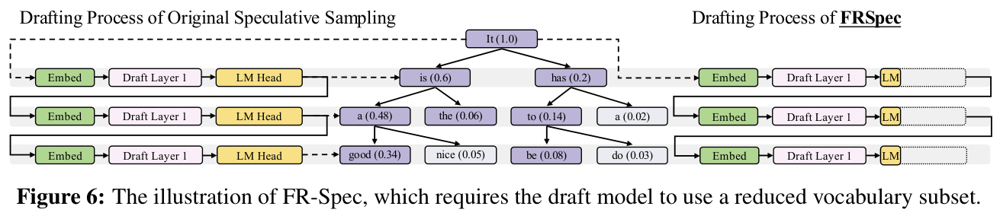
投机采样效果高度依赖草稿生成与验证两个阶段的效率。EAGLE-2（Li et al., 2024c）等近期进展使用单层 Transformer 进行草稿生成，以极轻量架构显著降低草稿开销。现代模型倾向使用更大词表以提高分词效率，这为语言建模头引入明显计算开销，使草稿生成即使只有一层也较慢。研究发现，从小词表转向大词表模型会显著增加草稿时间，形成限制投机采样效果的新性能瓶颈。
为此，我们提出 FR-Spec（Zhao et al., 2025），一种按频率排序的投机采样框架，通过策略性压缩词表空间优化草稿候选选择。方法利用自然语言 token 频率已得到充分记录的长尾分布：少量高频 token 占据大多数出现次数。将草稿搜索限制在按频率优先选择的 token 子集，FR-Spec 可将语言建模头计算开销最多降低 75%，同时维持验证过程的数学等价性，以及最终输出分布的正确性。
FR-Spec 为投机采样引入频率排序方法，策略性优化草稿阶段，同时保留验证过程数学等价性。如图 6 所示，框架依据词表空间压缩原则，将草稿模型计算范围限制为高频 token 子集，降低开销并保持可接受的草稿质量。
基于频率的词表子集构建。FR-Spec 的基础是系统识别、选择高频 token。我们对大规模预训练数据进行语料级分析，建立全面 token 频率排名。令 \(f(t)\) 为 token \(t\) 在语料 \(C\) 中的频率。将所有 \(t \in V\) 按频率降序排列，选 top-k token 形成缩减词表 \(V_{high} = \{t_{1}, t_{2}, \ldots , t_{k}\}\)，其中 \(f(t_{1}) \ge f(t_{2}) \ge \ldots \ge f(t_{k})\)。实证分析表明，选择约 25% 词表（\(k = 0.25\times |V|\)）性能最优，覆盖 95% token 出现次数，同时显著减少计算。
修改后的草稿计算。标准投机采样中，草稿模型在整个词表 \(V\) 上计算概率分布。FR-Spec 将计算限制于缩减词表 \(V_{high}\)。给定原始语言建模头矩阵 \(W_{LM} \in \mathbb{R} ^{|V|\times d}\)，提取高频 token 对应行，构建缩减矩阵 \(\tilde{W}_{LM} \in \mathbb{R} ^{|Vhigh|\times d}\)：
修改后的草稿计算为：
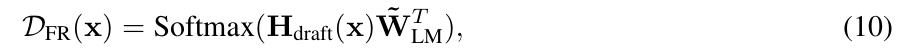
其中 \(H_{draft}(x) \in \mathbb{R} ^{n\times d}\) 表示输入序列 \(x\) 的草稿模型隐藏状态。
验证过程。FR-Spec 的关键设计原则是维持验证过程的数学正确性与分布等价性。目标 LLM 继续在完整词表空间 \(V\) 上运行，确保最终输出分布与标准投机采样完全相同：\(P_{target}(x) = Softmax(H_{target}(x)W^{T}_{LM})\)。这保证 FR-Spec 在获得计算加速的同时，产生统计等价结果。
计算复杂度分析。FR-Spec 的计算收益显著且明确。语言建模头复杂度从 \(O(nd|V|)\) 降为 \(O(nd|V_{high}|)\)，其中（接下页）
\(n\) 是草稿序列长度，\(d\) 是隐藏维度。缩减倍数为 \(|V|/|V_{high}|\)。同样，softmax 计算按比例减少，因为输入维度从 \(\mathbb{R} ^{n\times |V|}\) 降为 \(\mathbb{R} ^{n\times |Vhigh|}\)。在 \(|V_{high}| = 0.25\times |V|\) 的典型配置下，草稿模型语言建模头计算开销降低 4 倍。
FR-Spec 是即插即用的增强方法，可无缝集成已有投机采样技术，无需重新训练模型或修改架构。只需将标准草稿计算替换为频率排序版本，就能应用于不同投机采样框架。
如前所述，PTQ 和 QAT 都是重要模型量化方法。相比 QAT，PTQ 更轻量、更易实施。端侧部署计算资源受限，PTQ 需要同时量化权重与激活。
近期研究表明，大多数 LLM 在初始 token 位置出现巨大激活（Sun et al., 2024b），明显损害激活量化保真度。为此，沿用 PrefixQuant（Chen et al., 2024）隔离这些初始 token 激活 outlier。具体而言，在预处理时存储初始 key-value 激活，避免前几个输入 token 的前向传播出现过大激活幅值。
虽然 PrefixQuant 一定程度上解决推理时的激活 outlier，但我们发现初始 token 偏差也明显影响权重量化校准过程。基于这一观察，开发 GPTQ（Frantar et al., 2023）的扩展 Prefix-Aware GPTQ（\(P\)-GPTQ），在 Hessian 计算时消除初始 token 干扰。形式上，GPTQ 从校准数据 \(X \in \mathbb{R} ^{n\times d}\) 计算 Hessian 矩阵 \(H\)：
在 MiniCPM4 上的实验分析表明，计算下投影层的协方差矩阵 \(H\) 时，尤其是在更深 Transformer 块中，句首 token 和一些初始 token 会持续引入明显统计偏差。这些初始位置激活幅值比后续 token 大 10 倍，过度主导协方差结构，导致量化参数未达最优。为缓解偏差，P-GPTQ 使用位置感知校准策略。跨多层实证分析发现，\(s = 4\) 起的 token 位置统计特征稳定。仅考虑稳定位置计算 Hessian 矩阵：
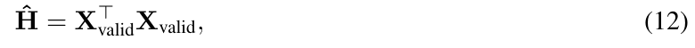
其中 \(X_{valid} = X[s:]\) 排除前 \(s\) 个位置。\(P\)-GPTQ 保持与其他量化技术兼容，包括 Quarot（Ashkboos et al., 2024）等旋转方法和 AWQ（Lin et al., 2024b）等平滑方法，可无缝集成现有量化流程。
我们在全部线性层量化为逐组 INT4 格式的设置下评估 P-GPTQ 及其扩展。校准使用训练集随机选择的 1,024 个序列。表 7 比较不同量化方法，S 表示 AWQ 预处理的平滑过程。结果显示，S-P-GPTQ 在量化方法中性能最好，相比 FP16 基线的性能下降最小。
目标模型量化。在 SpecMQuant（Zhang et al., 2025b）中，我们系统分析将投机采样用于量化模型时需要考虑的关键因素。例如，对 W4A16 目标模型（如 GPTQ（Frantar et al., 2023）量化模型）使用 EAGLE-2 时，草稿生成应比非量化目标模型使用更少草稿 token，因为量化模型已缓解目标模型的内存访问瓶颈。具体而言，令 \(n\) 个草稿 token 的验证时间为 \(T\)ᵥ(n)，目标模型普通 decoding 时间为 \(T_{t}\)；随着 \(n\) 增加，量化模型的验证与 decoding 时间比 \(T\)ᵥ\((n)/T_{t}\) 增长明显快于（接下页）
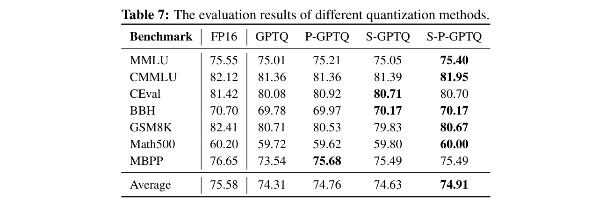
非量化模型。因此，使用更多草稿 token 所增加的接受长度，被验证时间的大幅延长抵消。
草稿模型量化。我们进一步量化 EAGLE-2 草稿模型，使草稿生成更快。此外，将草稿模型压缩为 4-bit 版本，也适合内存受限的端侧部署。但 QSpec（Zhao et al., 2024）发现，对 EAGLE-2 使用 GPTQ 会大幅降低接受率。因此，改为对 EAGLE-2 使用 QAT（第 3.3 节）。我们验证，采用我们 QAT 方法量化的 EAGLE-2 不损害投机采样的平均接受长度。
目标模型的 InfLLM v2。我们针对长上下文实现 InfLLM v2 稀疏 attention kernel。为支持投机采样的树状草稿验证，设草稿 token 总数为 \(n\)，仅为末尾 \(n\times n\) 区域构建局部二维 attention mask，并通过 uint64 位打包压缩，再传入 InfLLM v2 kernel。
草稿模型的滑动窗口。在长上下文场景中，草稿模型若使用全 attention，会显著增加 TTFT。沿用 TriForce（Sun et al., 2024a），我们对草稿模型应用 SWA。实验表明，这不仅尽量减小对 TTFT 的影响，还提升草稿准确性。
除计算资源有限外，端侧芯片碎片化是另一重大障碍。每次新模型发布都需适配多个平台与芯片类型，使适配和部署复杂，带来大量工程工作，几乎无法让模型在所有平台高效运行。
核心问题是解耦与高效代码复用：如何让一次技术研发与工程工作自动应用到多个平台？
为此，我们提出新型跨平台部署系统 ArkInfer。它以高效推理速度和通用跨平台兼容层服务不同模型应用，克服端侧芯片碎片化。我们引入三项关键方案：（1）跨平台兼容架构设计；（2）可复用且高效的投机与约束 decoding 方案；（3）可扩展模型库前端。
ArkInfer 架构设计的根本驱动力，是在碎片化端侧硬件中实现统一高效部署。它支持 MediaTek、Nvidia、Qualcomm、Rockchip 等平台及各自原生推理框架（如 NeuroPilot、Genie、RK-LLM、TensorRT-LLM，以及 CPU 的 llama.cpp），将它们无缝集成为可适配后端。
ArkInfer 的核心是强大的抽象层。该层通过适配器系统统一各后端不同 API，为上层组件提供一致接口。（接下页）
这确保无论底层硬件或框架如何，都能无缝交互。统一 Tensor 结构封装不同数据类型和维度，使数据处理更简洁，并支持全系统一致操作。专用 KV cache 管理器智能协调历史状态存储与检索，优化后续 token 生成，对 LLM 效率至关重要。
架构中心组件是抽象执行器接口，管理所有模型相关过程的运行时执行，以基本 tensor 类型定义输入输出。它覆盖核心神经网络执行（处理文本、图像、音频等输入模态编码及自回归 decoding）、生成多样输出的复杂采样技术，以及为模型准备输入数据的全面预处理。除此之外，ArkInfer 组合这些基础执行器来协调复杂预训练模型，并管理与外部工具调用功能的交互。
这一设计支持执行器粒度的异构调度，充分利用不同计算资源。通过跟踪执行器运行，还能追踪数据与操作流，大幅便利调试和性能分析，尤其是端侧适配常见难点——关键的逐阶段精度对齐。
高效 LLM 推理技术通常分三类：量化、稀疏化和自回归过程加速。前两类，如 GPTQ、MoE 和我们的 InfLLM v2，往往与具体硬件或算子实现深度耦合；投机采样和约束 decoding 等加速技术与底层硬件的耦合相对较松。因此，可在部署框架内实现一次优化，再用于多种芯片架构。ArkInfer 因而集成投机采样与约束 decoding 功能。设计理念以通用适用性和易于集成到现有执行后端为中心。
ArkInfer 生成输出 token 的核心组件接受处理后的输入，协调自回归生成过程。该组件支持一系列高级 decoding 策略，满足多样推理需求：
加速 speculative decoding。为提高推理速度，除前述投机采样方法外，ArkInfer 加入基于 BiTA 算法（Lin et al., 2024a）的高级 speculative decoding 机制。这是策略性选择，因为它无需额外草稿模型或特殊架构修改，就能显著提升性能，在保持高输出质量的同时简化资源受限端侧设备部署。
约束 decoding。为确保输出遵循 JSON、SQL 等特定格式，ArkInfer 使用基于 Guidance 算法的强大约束 decoding 方法。选择它是因为其强制遵循结构、提供确定性回复的能力优越，这对要求结构化或精确输出的应用至关重要。
端侧部署的重要障碍来自模型文件结构碎片化。不同芯片厂商经常提出独特要求和格式，导致部署流程复杂低效。我们认为，最优方法是维护集中式模型库，提供丰富的预适配模型。
为此，我们为 ArkInfer 开发可扩展跨平台前端，用户可直接访问、执行模型库中的不同模型，显著简化 MiniCPM 及其他模型在不同设备上的部署。为加快模型库增长与维护，还构建自动模型转换流程，能高效转换为各平台所需格式，大幅加快模型库持续开发。
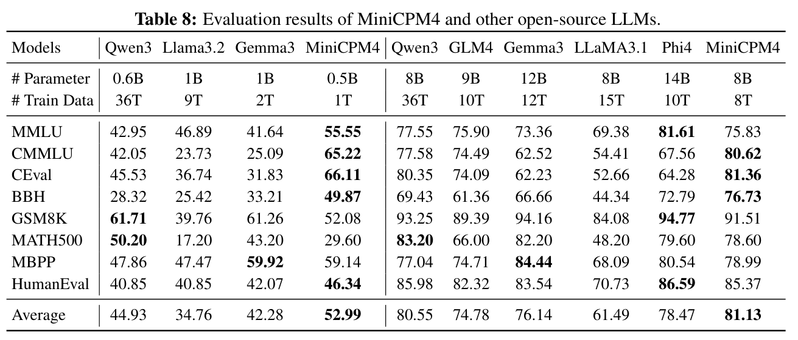
基于高效训练与推理机制，我们构建 MiniCPM4-8B 和 MiniCPM4-0.5B。本节在若干开源基准上评估模型有效性与效率。
基准。MiniCPM4 主要使用中英文语料预训练。因此，我们选择以下数据集评估：中英文知识密集型评估集 MMLU（Hendrycks et al., 2020）、CMMLU（Li et al., 2024a）、CEval（Huang et al., 2023）；推理评估集包括通用推理 BigBench Hard（BBH）（Suzgun et al., 2023），数学推理 GSM8K（Cobbe et al., 2021）、MATH500（Hendrycks et al., 2021）、AIME（MAA），代码推理 MBPP（Austin et al., 2021）、HumanEval（Chen et al., 2021）、LiveCodeBench（LCB）（Jain et al., 2024）。采用 OpenCompass（Contributors, 2023）作为评估框架。
基线模型。我们将两个 MiniCPM4 模型与若干广泛采用的开源 LLM 比较。对 MiniCPM4-0.5B，选约十亿参数模型，包括 Qwen3-0.5B（Yang et al., 2025）、Llama3.2-1B（Dubey et al., 2024）、Gemma3-1B（Team et al., 2025）。这些模型使用万亿 token 充分训练，并采用知识蒸馏，确保有效性。对 MiniCPM4-8B，选约百亿参数基线，包括 Qwen3-8B（Yang et al., 2025）、GLM4（0414 版本）（GLM et al., 2024）、Gemma3-12B（Team et al., 2025）和 Phi4-14B（Abdin et al., 2024）。
译注：正文写 Qwen3-0.5B，而表 8 列出的参数量为 0.6B，保留原文。
预训练流程。采用 µ\(P\) 作为基础模型架构。预训练前，先在数百万参数模型上搜索学习率、batch size 和参数初始化设置等超参数。随后按四阶段流程预训练 MiniCPM4。首先用 7 万亿 token 进行稳定预训练，学习率 \(7\times 10^{-3}\)；再用 1 万亿 token 进行退火预训练。这两阶段上下文长度为 4K。为支持长序列处理，将窗口从 4K 扩至 32K；这一阶段训练 200 亿 token，使用 LongRoPE（Ding et al., 2024）作为位置编码。值得注意的是，虽然只在 32K 上下文训练，但使用 YaRN（Peng et al., 2023）后，MiniCPM4 能处理 128K 序列。三个预训练阶段后，结合 SFT 和强化学习，构建混合推理模型 MiniCPM4.1。为实现极致推理加速，进一步额外训练投机预测头，提高草稿模型接受长度。
表 8 展示 MiniCPM4 与基线评估结果。可以观察到：1）我们的两个模型都在相近规模模型中取得最先进性能，证明了（接下页）
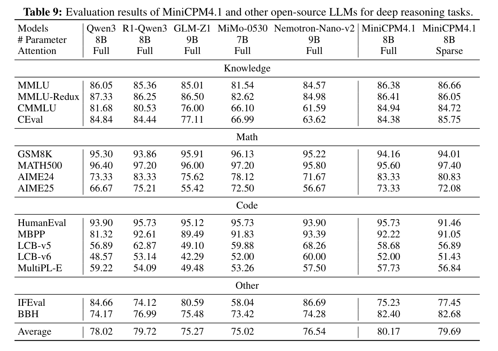
训练策略的有效性。此外，模型优于多个参数明显更多的开源 LLM。例如，MiniCPM4-0.5B 优于参数量为其两倍的 Llama3.2-1B 和 Gemma3-1B；MiniCPM4-8B 同样超过 Gemma3-12B 和 Phi4-14B。这进一步证实，借助高质量数据与高效学习算法，MiniCPM4 能取得卓越性能。2）相比这些开源模型，MiniCPM4 以显著更低训练成本取得出色性能。具体而言，它与 Qwen3 性能相当，但 Qwen3 训练使用 36 万亿 token，MiniCPM4 使用 8 万亿，仅为其数据规模的 22%。3）基线中的 Qwen3-0.6B/8B、Llama3.2-1B、Gemma3-1B/12B 等采用知识蒸馏训练，用更大教师模型指导端侧模型训练。结果表明，即使只用标准答案作为监督信号，我们的模型仍性能强劲。蒸馏过程部署教师模型需要大量计算资源。未来将探索更高效蒸馏策略，进一步增强端侧模型性能。
表 9 展示 MiniCPM4.1-8B 结果。可以观察到：1）模型性能有竞争力，总平均分 79.93，优于同规模模型，在不同任务中展现强大深度推理能力。2）全 attention（平均 79.93）与稀疏 attention（平均 79.14）仅差 0.79 分，说明稀疏 attention 对性能影响很小，却带来显著计算效率收益，使稀疏版本适合推理速度至关重要的实际部署。
译注：原文此段的平均分与表 9 不一致。原文正文为 79.93/79.14，表中为 80.17/79.69；均按原文保留。
在 MiniCPM4 中，我们使用稀疏 attention 将上下文窗口扩至 32K。本段评估长序列理解任务。具体而言，沿用 Hsieh et al.（2024），在 Needle-in-a-Haystack 任务（RULER-NIAH）上评估。应用 YaRN（Peng et al., 2023）将窗口扩至 128K，并使用 128K NIAH 评估 MiniCPM4。
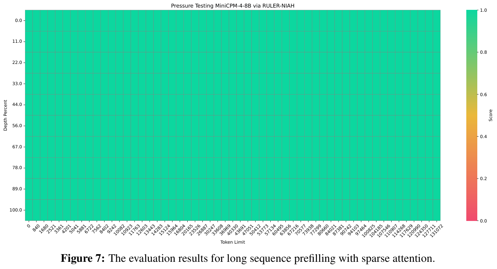
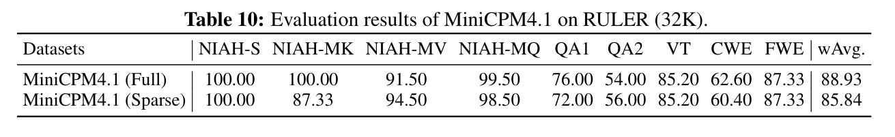
结果见图 7。可以观察到：1）MiniCPM4 在长序列上性能令人满意，在 Needle-in-a-Haystack 任务取得 100% 准确率。对每个 token，模型只需关注 6K 上下文 token，即在 128K 上下文中，MiniCPM4 的稀疏度仅为 5%。2）MiniCPM4 上下文窗口外推性能良好。即使只在 32K 上下文预训练，也能在 4 倍上下文长度上达到 100% 准确率。后续章节将模型应用于需要读写长文档的综述生成任务；MiniCPM4 能优于其他基线，展示其长序列处理有效性。
译注：原文将约 5% 的 attention 保留比例称为“稀疏度”，这里保留原用语；6K/128K 约为 4.7%。
根据表 10，MiniCPM4.1 在 RULER 上表现出强大长上下文性能。稀疏 attention 版本有以下优势：1）维持有竞争力的性能：虽然加权平均下降 3.09 个百分点（85.84% 对 88.93%），但许多长序列任务结果相当。2）计算效率：较小性能折衷表明，稀疏 attention 有效保留长上下文理解能力，同时显著节省计算，尤其适合需要长序列处理的资源受限应用。
为实现极致推理加速，我们在 MiniCPM4 中构建 InfLLM v2 稀疏 attention 机制，采用 FR-Spec 投机采样算法，提出前缀感知量化算法，并构建专用推理框架，在端侧设备实现极致加速。为验证所提算法的有效性，本节在两种典型端侧芯片上测试效率：Jetson AGX Orin 和 RTX 4090。前者广泛用于汽车芯片、机器人等端侧场景，后者主要作为个人电脑计算设备。
结果见图 1。我们评估 Llama3-8B（Dubey et al., 2024）、GLM4-9B（GLM et al., 2024）、Qwen3-8B（Yang et al., 2025）和 MiniCPM4 在 32K 至 128K 序列上的吞吐速度。可以观察到：1）相比参数规模相近的开源 LLM，（接下页）
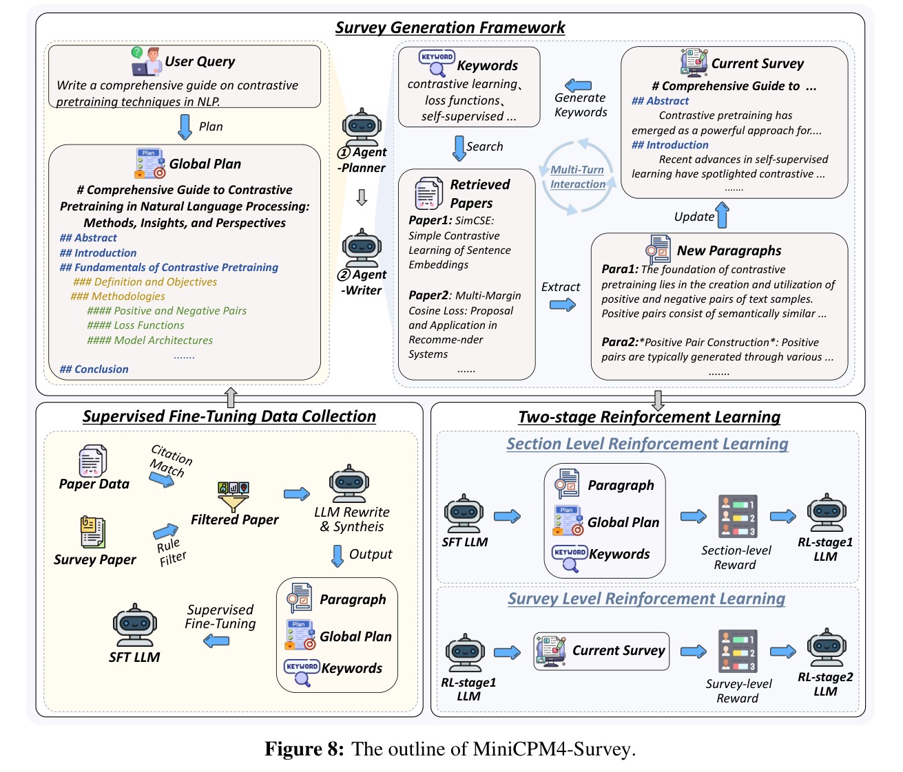
我们在 prefill 和 decoding 中都获得一致加速。具体而言，相比 Qwen3-8B，在 Jetson AGX Orin 上实现约 7 倍 decoding 加速，证明方法有效。2）文本越长，模型效率优势越明显，因为稀疏 attention 可有效降低长文本计算与内存访问开销。随着所需处理文本增长，传统稠密 attention 内存访问开销迅速增长，而 InfLLM v2 需访问的上下文块数保持恒定，仅语义核表示随序列长度缓慢增长。因此，MiniCPM4 在长序列处理中持续高效处理长文本。
MiniCPM4 的效率在多种场景中释放出引人注目的能力。我们重点展示三个关键应用：（1）可信综述生成，展示其高效长序列处理的优势，这对理解、综合大型文档中的复杂信息并生成准确总结至关重要。（2）通过 Model Context Protocol 使用工具，对以 agent 为中心的部署十分关键，使 MiniCPM4 可靠理解指令、上下文和状态信息，无缝与外部工具和 API 交互，这是构建稳健且能力强大的 agent 所必需的。
译注：原文称“三个关键应用”，但只列出上述两项，保留原文。
撰写全面文献综述，即使对经验丰富的研究者也极具挑战。这需要收集相关资源、汇聚与综合不同信息、确定关键挑战、预测未来研究方向等复杂能力。幸运的是，LLM 推动的 AI 技术快速演进，使自动化深度研究日益可行。近期工作（Wang et al., 2024c; Li et al., 2025b; Wang et al., 2025a），如 OpenAI Deep Research5、Gemini Deep Research6，利用现代 LLM 长篇推理能力构建实用综述系统，简化研究者吸收大量学术文献、快速掌握新领域的过程。
端侧综述系统具有与云服务互补的重要优势。对于保密需求严格、无法上传资源到云端的用户，本地部署的内部模型是唯一可行选择，维持数据完整性和控制权。此外，端侧部署小规模模型显著降低推理计算成本；综述写作本身 token 消耗高，这一点尤其关键。因此，本地系统对许多应用既安全又经济。
为此，提出基于 MiniCPM4-8B 的 MiniCPM4-Survey，能生成可信长篇综述论文，相对明显更大模型仍有竞争力。具体而言，模型采用“规划—检索—写作”方式，通过三个核心阶段运行：（1）规划：从全局定义综述整体结构，指定每节、小节与段落内容；（2）检索：根据规划器生成的大纲产生合适检索关键词，查询知识库获得相关文献；（3）写作：综合检索信息生成连贯的章节内容，迭代至整篇综述完成。
为增强 MiniCPM4-8B 在此任务的能力，我们整理、处理大量专家撰写的综述论文，构建高质量训练集。同时汇编大量研究论文构建检索数据库。进一步引入多阶段训练流程，包括 SFT、章节级强化学习、综述级强化学习。结合紧凑模型效率与严格训练方法，MiniCPM4-Survey 在保持易用、成本高效的同时，取得与大规模 LLM 相当、某些情况下更好的性能。
如前所述，综述生成涉及规划、迭代检索、内容生成等关键阶段，需要训练数据全面覆盖每个阶段。为改善 MiniCPM4 综述生成能力，优先构建主要源自学术综述的高质量数据集，确保稳健训练效果。具体而言，从 Kaggle7 收集约 271 万篇论文摘要作为基础数据，随后结合 MiniCPM-Embedding-Light8 与 Faiss9 构建高效检索索引。
为确保可用性与质量，原始数据在构建训练集前严格预处理，包括筛除表格、图像等多模态元素，删除数据库未索引的参考文献，以及统一格式。除简单规则外，我们大量使用 LLM 改写、精炼原始数据，提高一致性和相关性。此外，遵循 Wang et al.（2025a）的综述生成框架，从预处理数据合成查询、计划、检索关键词三类数据，再按 Query2Plan 和 Plan2Survey 阶段系统组织，分别得到 3,750 和 61,684 个训练样本。
5 https://openai.com/index/introducing-deep-research
6 https://gemini.google/overview/deep-research
7 https://www.kaggle.com/api/v1/datasets/download/Cornell-University/arxiv
8 https://huggingface.co/openbmb/MiniCPM-Embedding-Light
9 https://github.com/facebookresearch/faiss
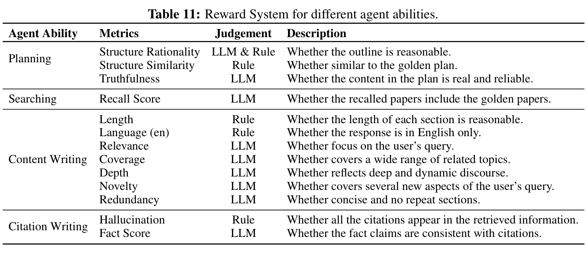
综述生成对基础模型相当复杂，因此首先用有限数据集开展小规模 SFT，取得有效冷启动性能，提高正例采样概率。随后转入强化学习（RL），实现稳定持续性能提升。我们将 RL 分为两个阶段：首先优化章节级奖励，确保各章内上下文连贯和结构准确；再将目标转向整体综述级目标，增强全局连贯性、深度和主题相关性。这种逐渐提高挑战的优化策略显著提升最终性能。
综述生成能力训练面临三个主要挑战。首先，难以用 PPL 等传统指标可靠评估生成综述质量，需要专用奖励系统。其次，综述生成有多个复杂阶段，需要稳健上下文管理，在促进高效推理的同时保留关键信息。第三，生成中迭代检索与评估需要低延迟交互，维持高效 RL 训练周期。为此，实施以下优化：
奖励设计：认识到奖励设计在 RL 中的关键作用，我们建立全面奖励框架，评估规划、检索、内容创作和引文准确性等能力。系统结合大规模语言模型和规则评估，考察结构连贯性、真实性、召回精确性、相关性、内容深度、覆盖广度、新颖性、冗余、幻觉频率和事实准确性等指标。详细描述见表 11。
上下文管理器：多步强化学习的固有复杂性需要稳健动态上下文管理，管理器包含三个基本功能：
并行环境交互：为缓解检索、评估系统等异步外部依赖带来的延迟，我们用专用服务器实例进行并行环境交互。借鉴近期异步 API 驱动多轮 RL 系统的发展，该策略减少反馈循环瓶颈，明显提高训练效率。
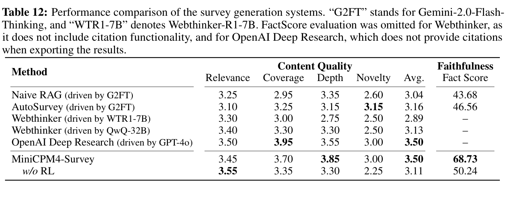
基线。为验证有效性，我们与以下代表性基线系统比较。它们覆盖一系列成熟方法，为比较提供全面基准：（1）Naive RAG 是直接的 RAG 方法，将查询检索到的全部文档直接输入模型，一次性、非迭代生成全面综述。（2）AutoSurvey（Wang et al., 2024c）是自动学术综述生成的结构化框架，通常采用规划、多源文献检索、连贯内容综合等系统流程。（3）WebThinker（Li et al., 2025b）是由大推理模型驱动的深度研究框架，用于问答或报告生成。我们评估使用 QwQ-32B（Team, 2025）和 DeepSeek-R1-Distill-Qwen-7B 的免训练配置作为比较基线。（4）OpenAI Deep Research 是 OpenAI 系统，利用 GPT 长篇推理能力，通过多步在线信息获取，根据用户查询生成详细报告。AutoSurvey 和 Naive RAG 均为免训练方法，我们使用 gemini-2.0-flash-thinking-exp-121910 作为骨干模型。
评估细节。使用 Wang et al.（2025a）发布的 SurveyEval 数据集作为测试集，包含 20 个测试样例。受 STORM（Shao et al., 2024a）和 FactScore（Min et al., 2023）启发，我们使用以下四个指标评估生成综述质量：（1）相关性：评估综述是否清晰聚焦并直接相关于用户特定查询，避免无关话题或偏离。（2）覆盖度：评估是否全面覆盖指定主题，充分探索关键子领域、不同方面和领域内重要既有知识。（3）深度：判断是否深入研究核心主题及相关领域，对复杂底层问题提供充分分析细节、批判性评估和有意义洞见。（4）新颖性：判断是否引入与初始查询相关的新视角、原创解释或此前未明确提出的重要联系。（5）Fact Score：量化综述中离散、可验证原子事实被合适且可信引用准确、明确支撑的比例。我们使用 GPT-4o 作为评判者评估这些指标。
译注：原文称“四个指标”，随后列出五项，保留原文。
结果。如表 12 所示，所提方法在内容相关指标上超过由开源模型（如 Webthinker）和闭源模型（如 AutoSurvey）驱动的基线系统，与 OpenAI Deep Research 性能相当，体现有效性与竞争力。此外，我们在所考察系统的事实指标上得分最高。MiniCPM4-Survey 从 SFT 到 RL 显著改善，证实后期引入 RL 组件有效。具体而言，覆盖度、深度和新颖性都有提升，表明探索与规划能力增强。尽管如此，在覆盖度和新颖性上仍落后于部分基线，说明策略规划和探索能力还有改善空间。
传统 LLM 与外部工具交互逻辑是静态设计的，缺乏标准化，无法适应 agent 与工具快速、独立演化。这导致维护成本高、可扩展性差、已有交互模式复用有限、设计标准碎片化，最终造成重复开发（Hou et al., 2025）。为此，MCP 建立通用标准化框架，使 LLM 无缝、安全连接不同工具，促进各种资源协同利用。
近期，开源社区构建了多种带工具的 MCP 服务器（Hou et al., 2025），旨在使 LLM 发现、选择、协调不同工具，解决真实任务。为跟上 MCP 服务器快速发展，我们研究为 MiniCPM4 提供 MCP 工具调用能力的潜力。
为此，提出基于 MiniCPM4-8B 的 MiniCPM4-MCP，通过 MCP 与多种工具和数据资源交互，解决广泛真实任务。我们展示适配 MiniCPM4、使其掌握带工具 MCP 服务器的过程。在人工标注 MCP 工具调用测试数据上的整体性能，证明 MiniCPM4-MCP 有效。
数据构建包含三部分：数据生成、反向数据生成，以及将现有函数调用数据集转换为 MCP 工具使用格式。其中反向数据生成包含单工具与跨工具设置。全部数据均经过人工和 LLM 辅助质量检查。细节如下。
数据生成。许多现有数据集包含高质量查询和最终结果标注。我们重点识别能借助 MCP 服务器有效解决的查询。为此，人工检查公开数据集覆盖的场景，选择相关子集。对每个选中数据集，使用配备 LLM、环境内集成 MCP 服务器的客户端，对查询完成过程采样。保留最终结果与原标注一致的轨迹，用于构建训练数据。
反向数据生成。对环境内集成的服务器与工具，用 Claude-3.7-Sonnet 根据每个工具描述反向构建查询。具体而言，生成必须使用目标工具的查询，再调用工具解决这些查询，形成单工具数据实例，称为单工具数据反向构建。此外，为训练跨工具调用能力，从同一服务器选两个工具及其描述，生成需同时使用两者的查询，并约束 Claude-3.7-Sonnet 调用两个指定工具解决查询。
现有工具学习数据转换。收集公开工具使用数据集，提取可解析、转换为符合 MCP 工具调用 schema 的轨迹格式数据，用于训练 MiniCPM4，使其具备遵循工具调用格式、准确理解用户指令、正确填写指定参数等基础能力。数据集约 140,000 个实例。
全部构建数据都经过人工评估和 LLM 验证的两阶段质检。通过人工检查的轨迹优先作为测试数据；通过模型检查但未经人工验证的轨迹保留为训练数据。
主要采用从示范中学习的方法训练模型。示范由 LLM 与 MCP 环境持续交互生成。因此，本节先介绍环境构建的关键特征，再介绍与环境交互的客户端关键特征，最后描述 MiniCPM 如何从示范学习。
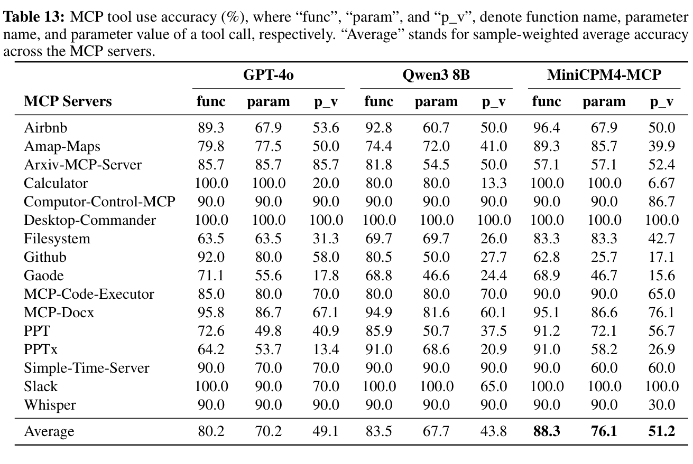
MCP 环境构建。环境搭建工作量大，调试耗时长。为尽量减少开发者工作、支持即插即用配置，我们采用基于 Docker 的方法，将所有服务器安装于 Docker 容器。具体而言，从官方与社区 MCP 网站收集常用、流行服务器，覆盖办公效率、日常生活、通信、信息服务和工作管理等领域，再于容器内调试至成功启动。
MCP 环境交互。MCP 中，客户端负责与服务器交互，包括握手获取可用工具列表。但许多现有 MCP 服务器由社区开发者独立部署，未经严格测试或质量保证。将全部列出工具直接暴露给 LLM，可能频繁调用失败，打断任务执行并损害性能。为此，我们在客户端加入工具质检机制：根据工具描述和元数据，提示 Claude-4 生成 10 个查询，每个必须调用当前工具。若模型执行查询时收到工具回复，无论回复是否正确，都表明通信正常。测试成功率达 100% 的工具及对应服务器才暴露给 LLM。
从示范中学习。基于 MCP Client，LLM（如 MiniCPM4-MCP）与 Docker 容器通信，无缝与构建环境交互。我们使用配备强大模型的客户端开展交互，筛选积累的交互经验，形成 MiniCPM4 的 SFT 训练数据。
评估细节。沿用常见评估指标（Qin et al., 2024），对人工标注测试数据中的每次工具调用，评估工具名称、参数名称、参数值的准确性。对含多步调用的轨迹，给定此前步骤的标准答案，评估当前步骤准确性。
结果。表 13 展示人工标注 MCP 工具调用测试数据上的整体性能。结果表明，Qwen3-8B 具有基本 MCP 工具调用能力，对工具理解和使用较为熟练，主要因为 MCP 工具调用与普通工具调用经验高度重叠。但对更新或更专业领域工具（如 arXiv、airbnb 等），Qwen3 较不熟悉，生成参数名和传递参数值时倾向套用其他工具的既有知识，未充分根据当前 MCP 工具特定要求调整、适配。相比之下，MiniCPM4 从示范学习，了解所收集服务器与工具的特点，因此测试性能更好。
本技术报告介绍具备高效预训练与推理的 MiniCPM4。借助高效预训练数据和基础设施，我们仅用 8 万亿 token 达到与现有开源模型相当的性能。凭借高效架构与推理系统，长序列处理实现 5 倍加速。为促进开源社区发展，我们发布 MiniCPM4 模型参数和推理代码。
未来将持续研究 LLM 高效训练与推理。在模型架构方面，致力于高效稀疏架构，目标是让模型在端侧处理无限长序列。在数据构建方面，聚焦提高现有语料质量、合成大规模推理密集型预训练数据集，显著增强基础能力。此外，持续探索 RL 的巨大潜力，使模型从不同环境学习技能。推理系统方面，计划为大多数端侧平台开发高效系统，帮助社区运行和评估模型。
MiniCPM4 和 MiniCPM4.1 是团队全体成员共同努力的成果。
Chaojun Xiao, Yuxuan Li, Xu Han
Yuzhuo Bai, Jie Cai, Haotian Chen, Wentong Chen, Xin Cong, Ganqu Cui, Ning Ding, Shengda Fan, Yewei Fang, Zixuan Fu, Wenyu Guan, Yitong Guan, Junshao Guo, Yufeng Han, Bingxiang He, Yuxiang Huang, Baoxi Ji, Cunliang Kong, Qiuzuo Li, Siyuan Li, Wenhao Li, Xin Li, Yanghao Li, Yishan Li, Zhen Li, Dan Liu, Biyuan Lin, Yankai Lin, Xiang Long, Quanyu Lu, Yaxi Lu, Peiyan Luo, Hongya Lyu, Litu Ou, Yinxu Pan, Lushi Pu, Zekai Qu, Qundong Shi, Zijun Song, Jiayuan Su, Zhou Su, Ao Sun, Xianghui Sun, Peijun Tang, Fangzheng Wang, Feng Wang, Shuo Wang, Yudong Wang, Zheng Wang, Yesai Wu, Zhenyu Xiao, Jie Xie, Zihao Xie, Xiaoyue Xu, Yukun Yan, Jiarui Yuan, Jinqian Zhang, Kaihuo Zhang, Lei Zhang, Linyue Zhang, Xueren Zhang, Yudi Zhang, Hengyu Zhao, Weilin Zhao, Weilun Zhao, Yuanqian Zhao, Zhi Zheng, Chuyue Zhou, Ge Zhou, Jie Zhou, Wei Zhou, Yanghao Zhou, Zihan Zhou, Zixuan Zhou
Xu Han, Zhiyuan Liu, Guoyang Zeng, Chao Jia, Dahai Li, Maosong Sun
Marah Abdin, Jyoti Aneja, Harkirat Behl, Sébastien Bubeck, Ronen Eldan, Suriya Gunasekar, Michael Harrison, Russell J Hewett, Mojan Javaheripi, Piero Kauffmann, et al. Phi-4 technical report. arXiv preprint arXiv:2412.08905, 2024.
题名译文：Phi-4 技术报告
Saleh Ashkboos, Amirkeivan Mohtashami, Maximilian L Croci, Bo Li, Pashmina Cameron, Martin Jaggi, Dan Alistarh, Torsten Hoefler, and James Hensman. Quarot: Outlier-free 4-bit inference in rotated llms. Proceedings of NeurIPS, 37:100213–100240, 2024.
题名译文：QuaRot：旋转 LLM 中的无 outlier 4-bit 推理
Jacob Austin, Augustus Odena, Maxwell Nye, Maarten Bosma, Henryk Michalewski, David Dohan, Ellen Jiang, Carrie Cai, Michael Terry, Quoc Le, et al. Program synthesis with large language models. arXiv preprint arXiv:2108.07732, 2021.
题名译文：使用 LLM 进行程序合成
Yushi Bai, Xin Lv, Jiajie Zhang, Yuze He, Ji Qi, Lei Hou, Jie Tang, Yuxiao Dong, and Juanzi Li. LongAlign: A recipe for long context alignment of large language models. In Findings of ACL: EMNLP 2024, pp. 1376–1395, Miami, Florida, USA, November 2024. Association for Computational Linguistics. doi: 10.18653/v1/2024.findings-emnlp.74.
题名译文：LongAlign：LLM 长上下文对齐方案
Johan Bjorck, Alon Benhaim, Vishrav Chaudhary, Furu Wei, and Xia Song. Scaling optimal lr across token horizons. arXiv preprint arXiv:2409.19913, 2024.
题名译文：跨 token 训练跨度扩展最优学习率
Rishi Bommasani, Drew A. Hudson, Ehsan Adeli, Russ Altman, Simran Arora, Sydney von Arx, Michael S. Bernstein, Jeannette Bohg, Antoine Bosselut, Emma Brunskill, Erik Brynjolfsson, Shyamal Buch, Dallas Card, Rodrigo Castellon, Niladri S. Chatterji, Annie S. Chen, Kathleen Creel, Jared Quincy Davis, Dorottya Demszky, Chris Donahue, Moussa Doumbouya, Esin Durmus, Stefano Ermon, John Etchemendy, Kawin Ethayarajh, Li Fei-Fei, Chelsea Finn, Trevor Gale, Lauren Gillespie, Karan Goel, Noah D. Goodman, Shelby Grossman, Neel Guha, Tatsunori Hashimoto, Peter Henderson, John Hewitt, Daniel E. Ho, Jenny Hong, Kyle Hsu, Jing Huang, Thomas Icard, Saahil Jain, Dan Jurafsky, Pratyusha Kalluri, Siddharth Karamcheti, Geoff Keeling, Fereshte Khani, Omar Khattab, Pang Wei Koh, Mark S. Krass, Ranjay Krishna, Rohith Kuditipudi, and et al. On the opportunities and risks of foundation models. CoRR, abs/2108.07258, 2021.
题名译文：基础模型的机遇与风险
Blake Bordelon, Lorenzo Noci, Mufan Bill Li, Boris Hanin, and Cengiz Pehlevan. Depthwise hyperparameter transfer in residual networks: Dynamics and scaling limit. In Proceedings of ICLR, 2023.
题名译文：残差网络中的深度方向超参数迁移：动力学与扩展极限
Tom B. Brown, Benjamin Mann, Nick Ryder, Melanie Subbiah, Jared Kaplan, Prafulla Dhariwal, Arvind Neelakantan, Pranav Shyam, Girish Sastry, Amanda Askell, Sandhini Agarwal, Ariel Herbert-Voss, Gretchen Krueger, Tom Henighan, Rewon Child, Aditya Ramesh, Daniel M. Ziegler, Jeffrey Wu, Clemens Winter, Christopher Hesse, Mark Chen, Eric Sigler, Mateusz Litwin, Scott Gray, Benjamin Chess, Jack Clark, Christopher Berner, Sam McCandlish, Alec Radford, Ilya Sutskever, and Dario Amodei. Language models are few-shot learners. In Proceedings of NeurIPS, 2020.
题名译文：语言模型是少样本学习者
Tianle Cai, Yuhong Li, Zhengyang Geng, Hongwu Peng, Jason D Lee, Deming Chen, and Tri Dao. Medusa: Simple llm inference acceleration framework with multiple decoding heads. In Proceedings of ICML, pp. 5209–5235. PMLR, 2024.
题名译文：Medusa：具有多个 decoding 头的简单 LLM 推理加速框架
Charlie Chen, Sebastian Borgeaud, Geoffrey Irving, Jean-Baptiste Lespiau, Laurent Sifre, and John Jumper. Accelerating large language model decoding with speculative sampling. arXiv preprint arXiv:2302.01318, 2023.
题名译文：使用投机采样加速LLMdecoding
Mark Chen, Jerry Tworek, Heewoo Jun, Qiming Yuan, Henrique Ponde De Oliveira Pinto, Jared Kaplan, Harri Edwards, Yuri Burda, Nicholas Joseph, Greg Brockman, et al. Evaluating large language models trained on code. arXiv preprint arXiv:2107.03374, 2021.
题名译文：评估在代码上训练的 LLM
Mengzhao Chen, Yi Liu, Jiahao Wang, Yi Bin, Wenqi Shao, and Ping Luo. Prefixquant: Static quantization beats dynamic through prefixed outliers in llms. arXiv preprint arXiv:2410.05265, 2024.
题名译文：PrefixQuant：通过 LLM 中的前缀 outlier 使静态量化优于动态量化
Karl Cobbe, Vineet Kosaraju, Mohammad Bavarian, Mark Chen, Heewoo Jun, Lukasz Kaiser, Matthias Plappert, Jerry Tworek, Jacob Hilton, Reiichiro Nakano, et al. Training verifiers to solve math word problems. arXiv preprint arXiv:2110.14168, 2021.
题名译文：训练验证器以解决数学应用题
OpenCompass Contributors. Opencompass: A universal evaluation platform for foundation models. https://github.com/open-compass/opencompass, 2023.
题名译文：OpenCompass：基础模型通用评估平台
Tri Dao, Dan Fu, Stefano Ermon, Atri Rudra, and Christopher Ré. Flashattention: Fast and memory-efficient exact attention with io-awareness. Proceedings of NeurIPS, 35:16344–16359, 2022.
题名译文：FlashAttention：具有 IO 感知能力的快速、内存高效精确 attention
Team DeepSeek, Aixin Liu, Bei Feng, Bing Xue, Bingxuan Wang, Bochao Wu, Chengda Lu, Chenggang Zhao, Chengqi Deng, Chenyu Zhang, Chong Ruan, et al. Deepseek-v3 technical report. arXiv preprint arXiv:2412.19437, 2024.
题名译文：DeepSeek-V3 技术报告
Team DeepSeek, Daya Guo, Dejian Yang, Haowei Zhang, Junxiao Song, Ruoyu Zhang, Runxin Xu, Qihao Zhu, Shirong Ma, Peiyi Wang, Xiao Bi, et al. Deepseek-r1: Incentivizing reasoning capability in llms via reinforcement learning. arXiv preprint arXiv:2501.12948, 2025.
题名译文：DeepSeek-R1：通过强化学习激发 LLM 推理能力
Ning Ding, Yulin Chen, Bokai Xu, Yujia Qin, Shengding Hu, Zhiyuan Liu, Maosong Sun, and Bowen Zhou. Enhancing chat language models by scaling high-quality instructional conversations. In Proceedings of EMNLP, pp. 3029–3051, 2023.
题名译文：通过扩展高质量指令对话增强聊天语言模型
Yiran Ding, Li Lyna Zhang, Chengruidong Zhang, Yuanyuan Xu, Ning Shang, Jiahang Xu, Fan Yang, and Mao Yang. Longrope: Extending LLM context window beyond 2 million tokens. CoRR, abs/2402.13753, 2024. doi: 10.48550/ARXIV.2402.13753.
题名译文：LongRoPE：将 LLM 上下文窗口扩展至超过 200 万 token
Abhimanyu Dubey, Abhinav Jauhri, Abhinav Pandey, Abhishek Kadian, Ahmad Al-Dahle, Aiesha Letman, Akhil Mathur, Alan Schelten, Amy Yang, Angela Fan, et al. The llama 3 herd of models. arXiv preprint arXiv:2407.21783, 2024.
题名译文：Llama 3 模型家族
Katie E Everett, Lechao Xiao, Mitchell Wortsman, Alexander A Alemi, Roman Novak, Peter J Liu, Izzeddin Gur, Jascha Sohl-Dickstein, Leslie Pack Kaelbling, Jaehoon Lee, et al. Scaling exponents across parameterizations and optimizers. In Proceedings of ICML, pp. 12666–12700. PMLR, 2024.
题名译文：不同参数化与优化器的扩展指数
Clémentine Fourrier, Nathan Habib, Hynek Kydlíček, Thomas Wolf, and Lewis Tunstall. Lighteval: A lightweight framework for llm evaluation, 2023. URL https://github.com/huggingface/lighteval.
题名译文：Lighteval：轻量 LLM 评估框架
Elias Frantar, Saleh Ashkboos, Torsten Hoefler, and Dan Alistarh. GPTQ: Accurate post-training compression for generative pretrained transformers. In Proceedings of ICLR, 2023.
题名译文：GPTQ：生成式预训练 Transformer 的精确训练后压缩
Tao Ge, Xin Chan, Xiaoyang Wang, Dian Yu, Haitao Mi, and Dong Yu. Scaling synthetic data creation with 1,000,000,000 personas. arXiv preprint arXiv:2406.20094, 2024.
题名译文：借助 1,000,000,000 个角色设定扩展合成数据创建
Team GLM, Aohan Zeng, Bin Xu, Bowen Wang, Chenhui Zhang, Da Yin, Dan Zhang, Diego Rojas, Guanyu Feng, Hanlin Zhao, et al. Chatglm: A family of large language models from glm-130b to glm-4 all tools. arXiv preprint arXiv:2406.12793, 2024.
题名译文：ChatGLM：从 GLM-130B 到 GLM-4 All Tools 的 LLM 家族
Fabian Gloeckle, Badr Youbi Idrissi, Baptiste Rozière, David Lopez-Paz, and Gabriel Synnaeve. Better & faster large language models via multi-token prediction. In Proceedings of ICML, pp. 15706–15734, 2024.
题名译文：通过 MTP 获得更好、更快的 LLM
Tom Gunter, Zirui Wang, Chong Wang, Ruoming Pang, Andy Narayanan, Aonan Zhang, Bowen Zhang, Chen Chen, Chung-Cheng Chiu, David Qiu, et al. Apple intelligence foundation language models. CoRR, abs/2407.21075, 2024. doi: 10.48550/ARXIV.2407.21075.
题名译文：Apple Intelligence 基础语言模型
Xu Han, Zhengyan Zhang, Ning Ding, Yuxian Gu, Xiao Liu, Yuqi Huo, Jiezhong Qiu, Yuan Yao, Ao Zhang, Liang Zhang, Wentao Han, Minlie Huang, Qin Jin, Yanyan Lan, Yang Liu, Zhiyuan Liu, Zhiwu Lu, Xipeng Qiu, Ruihua Song, Jie Tang, Ji-Rong Wen, Jinhui Yuan, Wayne Xin Zhao, and Jun Zhu. Pre-trained models: Past, present and future. AI Open, 2:225–250, 2021.
题名译文：预训练模型：过去、现在与未来
Dan Hendrycks, Collin Burns, Steven Basart, Andy Zou, Mantas Mazeika, Dawn Song, and Jacob Steinhardt. Measuring massive multitask language understanding. In International Conference on Learning Representations, 2020.
题名译文：衡量大规模多任务语言理解
Dan Hendrycks, Collin Burns, Saurav Kadavath, Akul Arora, Steven Basart, Eric Tang, Dawn Song, and Jacob Steinhardt. Measuring mathematical problem solving with the math dataset. In Proceedings of NeurIPS: Datasets and Benchmarks Track, 2021.
题名译文：使用 MATH 数据集衡量数学问题求解能力
Jordan Hoffmann, Sebastian Borgeaud, Arthur Mensch, Elena Buchatskaya, Trevor Cai, Eliza Rutherford, Diego de Las Casas, Lisa Anne Hendricks, Johannes Welbl, Aidan Clark, Tom Hennigan, Eric Noland, Katie Millican, George van den Driessche, Bogdan Damoc, Aurelia Guy, Simon Osindero, Karen Simonyan, Erich Elsen, Jack W. Rae, Oriol Vinyals, and Laurent Sifre. Training compute-optimal large language models. CoRR, abs/2203.15556, 2022. doi: 10.48550/ARXIV.2203.15556.
题名译文：训练计算最优的 LLM
Xinyi Hou, Yanjie Zhao, Shenao Wang, and Haoyu Wang. Model Context Protocol (MCP): Landscape, Security Threats, and Future Research Directions, April 2025.
题名译文：Model Context Protocol（MCP）：现状、安全威胁与未来研究方向
Cheng-Ping Hsieh, Simeng Sun, Samuel Kriman, Shantanu Acharya, Dima Rekesh, Fei Jia, and Boris Ginsburg. Ruler: What’s the real context size of your long-context language models? In First Conference on Language Modeling, 2024.
题名译文：RULER：你的长上下文语言模型实际上下文长度是多少？
Shengding Hu, Yuge Tu, Xu Han, Chaoqun He, Ganqu Cui, Xiang Long, Zhi Zheng, Yewei Fang, Yuxiang Huang, Weilin Zhao, et al. Minicpm: Unveiling the potential of small language models with scalable training strategies. CoRR, abs/2404.06395, 2024. doi: 10.48550/ARXIV.2404.06395.
题名译文：MiniCPM：通过可扩展训练策略揭示小语言模型潜力
Yuzhen Huang, Yuzhuo Bai, Zhihao Zhu, Junlei Zhang, Jinghan Zhang, Tangjun Su, Junteng Liu, Chuancheng Lv, Yikai Zhang, Yao Fu, et al. C-eval: A multi-level multi-discipline chinese evaluation suite for foundation models. Proceedings of NeurIPS, 36:62991–63010, 2023.
题名译文：C-Eval：面向基础模型的多层次、多学科中文评估套件
Naman Jain, King Han, Alex Gu, Wen-Ding Li, Fanjia Yan, Tianjun Zhang, Sida Wang, Armando Solar-Lezama, Koushik Sen, and Ion Stoica. Livecodebench: Holistic and contamination free evaluation of large language models for code. In The Thirteenth International Conference on Learning Representations, 2024.
题名译文：LiveCodeBench：LLM 代码能力的全面且无污染评估
Huiqiang Jiang, Yucheng Li, Chengruidong Zhang, Qianhui Wu, Xufang Luo, Surin Ahn, Zhenhua Han, Amir H Abdi, Dongsheng Li, Chin-Yew Lin, et al. Minference: Accelerating pre-filling for long-context llms via dynamic sparse attention. In Workshop on Efficient Systems for Foundation Models II@ ICML2024, 2024.
题名译文：MInference：通过动态稀疏 attention 加速长上下文LLMprefill
Carlos E Jimenez, John Yang, Alexander Wettig, Shunyu Yao, Kexin Pei, Ofir Press, and Karthik R Narasimhan. Swe-bench: Can language models resolve real-world github issues? In Proceedings of ICLR, 2023.
题名译文：SWE-bench：语言模型能解决真实 GitHub issue 吗？
Jared Kaplan, Sam McCandlish, Tom Henighan, Tom B. Brown, Benjamin Chess, Rewon Child, Scott Gray, Alec Radford, Jeffrey Wu, and Dario Amodei. Scaling laws for neural language models. CoRR, abs/2001.08361, 2020.
题名译文：神经语言模型的 scaling laws
Tanishq Kumar, Zachary Ankner, Benjamin F. Spector, Blake Bordelon, Niklas Muennighoff, Mansheej Paul, Cengiz Pehlevan, Christopher Ré, and Aditi Raghunathan. Scaling laws for precision, 2024.
题名译文：精度的 scaling laws
Yaniv Leviathan, Matan Kalman, and Yossi Matias. Fast inference from transformers via speculative decoding. In Proceedings of ICML, pp. 19274–19286. PMLR, 2023.
题名译文：通过 speculative decoding 实现 Transformer 快速推理
Haonan Li, Yixuan Zhang, Fajri Koto, Yifei Yang, Hai Zhao, Yeyun Gong, Nan Duan, and Timothy Baldwin. Cmmlu: Measuring massive multitask language understanding in chinese. In Findings of ACL: ACL 2024, pp. 11260–11285, 2024a.
题名译文：CMMLU：衡量大规模多任务中文语言理解
Houyi Li, Wenzheng Zheng, Jingcheng Hu, Qiufeng Wang, Hanshan Zhang, Zili Wang, Shijie Xuyang, Yuantao Fan, Shuigeng Zhou, Xiangyu Zhang, and Daxin Jiang. Predictable scale: Part i – optimal hyperparameter scaling law in large language model pretraining, 2025a.
题名译文：Predictable Scale：第一部分——LLM 预训练中的最优超参数 scaling laws
Jeffrey Li, Alex Fang, Georgios Smyrnis, Maor Ivgi, Matt Jordan, Samir Gadre, Hritik Bansal, Etash Guha, Sedrick Keh, Kushal Arora, et al. Datacomp-lm: In search of the next generation of training sets for language models. arXiv preprint arXiv:2406.11794, 2024b.
题名译文：DataComp-LM：寻找下一代语言模型训练集
Xiaoxi Li, Jiajie Jin, Guanting Dong, Hongjin Qian, Yutao Zhu, Yongkang Wu, Ji-Rong Wen, and Zhicheng Dou. Webthinker: Empowering large reasoning models with deep research capability. arXiv preprint arXiv:2504.21776, 2025b.
题名译文：WebThinker：赋予大推理模型深度研究能力
Yuhui Li, Fangyun Wei, Chao Zhang, and Hongyang Zhang. Eagle-2: Faster inference of language models with dynamic draft trees. In Proceedings of EMNLP, pp. 7421–7432, 2024c.
题名译文：EAGLE-2：通过动态草稿树加速语言模型推理
Feng Lin, Hanling Yi, Hongbin Li, Yifan Yang, Xiaotian Yu, Guangming Lu, and Rong Xiao. Bita: Bi-directional tuning for lossless acceleration in large language models, 2024a.
题名译文：BiTA：通过双向调优实现 LLM 无损加速
Ji Lin, Jiaming Tang, Haotian Tang, Shang Yang, Wei-Ming Chen, Wei-Chen Wang, Guangxuan Xiao, Xingyu Dang, Chuang Gan, and Song Han. Awq: Activation-aware weight quantization for on-device llm compression and acceleration. Proceedings of MLSys, 6:87–100, 2024b.
题名译文：AWQ：面向端侧 LLM 压缩与加速的激活感知权重量化
Lucas Lingle. A large-scale exploration of mu-transfer. arXiv preprint arXiv:2404.05728, 2024.
题名译文：对 µ-transfer 的大规模探索
Aixin Liu, Bei Feng, Bin Wang, Bingxuan Wang, Bo Liu, Chenggang Zhao, Chengqi Dengr, Chong Ruan, Damai Dai, Daya Guo, et al. Deepseek-v2: A strong, economical, and efficient mixture-of-experts language model. arXiv preprint arXiv:2405.04434, 2024a.
题名译文：DeepSeek-V2：强大、经济且高效的 MoE 语言模型
Zechun Liu, Barlas Oguz, Changsheng Zhao, Ernie Chang, Pierre Stock, Yashar Mehdad, Yangyang Shi, Raghuraman Krishnamoorthi, and Vikas Chandra. LLM-QAT: Data-free quantization aware training for large language models. In Lun-Wei Ku, Andre Martins, and Vivek Srikumar (eds.), Findings of ACL: ACL 2024, pp. 467–484, Bangkok, Thailand, August 2024b. Association for Computational Linguistics. doi: 10.18653/v1/2024.findings-acl.26.
题名译文：LLM-QAT：LLM 的无数据 QAT
Zuxin Liu, Thai Hoang, Jianguo Zhang, Ming Zhu, Tian Lan, Juntao Tan, Weiran Yao, Zhiwei Liu, Yihao Feng, Rithesh RN, et al. Apigen: Automated pipeline for generating verifiable and diverse function-calling datasets. Proceedings of NeurIPS, 37:54463–54482, 2024c.
题名译文：APIGen：生成可验证、多样化函数调用数据集的自动流程
Enzhe Lu, Zhejun Jiang, Jingyuan Liu, Yulun Du, Tao Jiang, Chao Hong, Shaowei Liu, Weiran He, Enming Yuan, Yuzhi Wang, et al. Moba: Mixture of block attention for long-context llms. arXiv preprint arXiv:2502.13189, 2025.
题名译文：MoBA：用于长上下文 LLM 的混合块 attention
Shuming Ma, Hongyu Wang, Lingxiao Ma, Lei Wang, Wenhui Wang, Shaohan Huang, Li Dong, Ruiping Wang, Jilong Xue, and Furu Wei. The era of 1-bit llms: All large language models are in 1.58 bits. arXiv preprint arXiv:2402.17764, 2024.
题名译文：1-bit LLM 时代：所有 LLM 都采用 1.58 bit
Shuming Ma, Hongyu Wang, Shaohan Huang, Xingxing Zhang, Ying Hu, Ting Song, Yan Xia, and Furu Wei. Bitnet b1.58 2b4t technical report, 2025.
题名译文：BitNet b1.58 2B4T 技术报告
MAA. American invitational mathematics examination-aime. URL https://maa.org/maa-invitational-competitions/.
题名译文：美国数学邀请赛 AIME
Sewon Min, Kalpesh Krishna, Xinxi Lyu, Mike Lewis, Wen-tau Yih, Pang Wei Koh, Mohit Iyyer, Luke Zettlemoyer, and Hannaneh Hajishirzi. Factscore: Fine-grained atomic evaluation of factual precision in long form text generation. arXiv preprint arXiv:2305.14251, 2023.
题名译文：FactScore：长篇文本生成中事实精确性的细粒度原子评估
OpenAI. GPT-4 technical report. CoRR, abs/2303.08774, 2023.
题名译文：GPT-4 技术报告
OpenAI. Gpt-4o mini: advancing cost-efficient intelligence. Technical Report, 2024a. URL https://openai.com/index/gpt-4o-mini-advancing-cost-efficient-intelligence/.
题名译文：GPT-4o mini：推进高成本效率的智能
OpenAI. Openai o1 system card. CoRR, abs/2412.16720, 2024b.
题名译文：OpenAI o1 系统卡
OpenAI. Introducing deep research. https://openai.com/index/introducing-deep-research/, 2025.
题名译文：介绍 Deep Research
Long Ouyang, Jeffrey Wu, Xu Jiang, Diogo Almeida, Carroll L. Wainwright, Pamela Mishkin, Chong Zhang, Sandhini Agarwal, Katarina Slama, Alex Ray, John Schulman, Jacob Hilton, Fraser Kelton, Luke Miller, Maddie Simens, Amanda Askell, Peter Welinder, Paul F. Christiano, Jan Leike, and Ryan Lowe. Training language models to follow instructions with human feedback. In Proceedings of NeurIPS, 2022.
题名译文：通过人类反馈训练语言模型遵循指令
Xu Ouyang, Tao Ge, Thomas Hartvigsen, Zhisong Zhang, Haitao Mi, and Dong Yu. Low-bit quantization favors undertrained llms: Scaling laws for quantized llms with 100t training tokens, 2024.
题名译文：低比特量化有利于训练不足的 LLM：100T 训练 token 下量化 LLM 的 scaling laws
Guilherme Penedo, Hynek Kydlíček, Anton Lozhkov, Margaret Mitchell, Colin A Raffel, Leandro Von Werra, Thomas Wolf, et al. The fineweb datasets: Decanting the web for the finest text data at scale. Proceedings of NeurIPS, 37:30811–30849, 2024.
题名译文：FineWeb 数据集：大规模提炼网络中的优质文本数据
Bowen Peng, Jeffrey Quesnelle, Honglu Fan, and Enrico Shippole. Yarn: Efficient context window extension of large language models. CoRR, abs/2309.00071, 2023.
题名译文：YaRN：高效扩展 LLM 上下文窗口
Yujia Qin, Shihao Liang, Yining Ye, Kunlun Zhu, Lan Yan, Yaxi Lu, Yankai Lin, Xin Cong, Xiangru Tang, Bill Qian, Sihan Zhao, Lauren Hong, Runchu Tian, Ruobing Xie, Jie Zhou, Mark Gerstein, dahai li, Zhiyuan Liu, and Maosong Sun. ToolLLM: Facilitating large language models to master 16000+ real-world APIs. In Proceedings of ICLR, 2024.
题名译文：ToolLLM：帮助 LLM 掌握 16000+ 个真实 API
Xipeng Qiu, Tianxiang Sun, Yige Xu, Yunfan Shao, Ning Dai, and Xuanjing Huang. Pre-trained models for natural language processing: A survey. CoRR, abs/2003.08271, 2020.
题名译文：自然语言处理预训练模型综述
Yijia Shao, Yucheng Jiang, Theodore A Kanell, Peter Xu, Omar Khattab, and Monica S Lam. Assisting in writing wikipedia-like articles from scratch with large language models. arXiv preprint arXiv:2402.14207, 2024a.
题名译文：辅助 LLM 从头撰写类似维基百科的文章
Zhihong Shao, Peiyi Wang, Qihao Zhu, Runxin Xu, Junxiao Song, Xiao Bi, Haowei Zhang, Mingchuan Zhang, YK Li, Y Wu, et al. Deepseekmath: Pushing the limits of mathematical reasoning in open language models. arXiv preprint arXiv:2402.03300, 2024b.
题名译文：DeepSeekMath：推动开放语言模型数学推理的极限
Hanshi Sun, Zhuoming Chen, Xinyu Yang, Yuandong Tian, and Beidi Chen. Triforce: Lossless acceleration of long sequence generation with hierarchical speculative decoding. In Proceedings of CoLM, 2024a.
题名译文：TriForce：通过分层 speculative decoding 无损加速长序列生成
Mingjie Sun, Xinlei Chen, J Zico Kolter, and Zhuang Liu. Massive activations in large language models. arXiv preprint arXiv:2402.17762, 2024b.
题名译文：LLM 中的巨大激活
Mirac Suzgun, Nathan Scales, Nathanael Schärli, Sebastian Gehrmann, Yi Tay, Hyung Won Chung, Aakanksha Chowdhery, Quoc V Le, Ed H Chi, Denny Zhou, et al. Challenging big-bench tasks and whether chain-of-thought can solve them. In Findings of ACL: ACL 2023, 2023.
题名译文：具有挑战性的 BIG-Bench 任务，以及 CoT 能否解决这些任务
Gemma Team, Aishwarya Kamath, Johan Ferret, Shreya Pathak, Nino Vieillard, Ramona Merhej, Sarah Perrin, Tatiana Matejovicova, Alexandre Ramé, Morgane Rivière, et al. Gemma 3 technical report. arXiv preprint arXiv:2503.19786, 2025.
题名译文：Gemma 3 技术报告
Qwen Team. Qwq-32b: Embracing the power of reinforcement learning, March 2025. URL https://qwenlm.github.io/blog/qwq-32b/.
题名译文：QwQ-32B：拥抱强化学习的力量
Thomas van Dongen and Stephan Tulkens. Semhash: Fast semantic text deduplication & filtering, 2025. URL https://github.com/MinishLab/semhash.
题名译文：Semhash：快速语义文本去重与筛选
Ashish Vaswani, Noam Shazeer, Niki Parmar, Jakob Uszkoreit, Llion Jones, Aidan N. Gomez, Lukasz Kaiser, and Illia Polosukhin. Attention is all you need. In Proceedings of NeurIPS, pp. 5998–6008, 2017.
题名译文：attention 就是你所需要的一切
Haoyu Wang, Yujia Fu, Zhu Zhang, Shuo Wang, Zirui Ren, Xiaorong Wang, Zhili Li, Chaoqun He, Bo An, Zhiyuan Liu, and Maosong Sun. Llm×mapreduce-v2: Entropy-driven convolutional test-time scaling for generating long-form articles from extremely long resources, 2025a.
题名译文：LLM×MapReduce-v2：从超长资源生成长篇文章的熵驱动卷积 test-time scaling
Hongyu Wang, Shuming Ma, Li Dong, Shaohan Huang, Huaijie Wang, Lingxiao Ma, Fan Yang, Ruiping Wang, Yi Wu, and Furu Wei. Bitnet: Scaling 1-bit transformers for large language models. arXiv preprint arXiv:2310.11453, 2023.
题名译文：BitNet：面向 LLM 扩展 1-bit Transformer
Liangdong Wang, Bo-Wen Zhang, Chengwei Wu, Hanyu Zhao, Xiaofeng Shi, Shuhao Gu, Jijie Li, Quanyue Ma, TengFei Pan, and Guang Liu. Cci3. 0-hq: a large-scale chinese dataset of high quality designed for pre-training large language models. arXiv preprint arXiv:2410.18505, 2024a.
题名译文：CCI3.0-HQ：为 LLM 预训练设计的大规模高质量中文数据集
Xingyao Wang, Yangyi Chen, Lifan Yuan, Yizhe Zhang, Yunzhu Li, Hao Peng, and Heng Ji. Executable code actions elicit better llm agents. In Proceedings of ICML, 2024b.
题名译文：可执行代码动作产生更好的LLMagent
Yidong Wang, Qi Guo, Wenjin Yao, Hongbo Zhang, Xin Zhang, Zhen Wu, Meishan Zhang, Xinyu Dai, Qingsong Wen, Wei Ye, et al. Autosurvey: Large language models can automatically write surveys. Advances in Neural Information Processing Systems, 37:115119–115145, 2024c.
题名译文：AutoSurvey：LLM 可以自动撰写综述
Yudong Wang, Zixuan Fu, Jie Cai, Peijun Tang, Hongya Lyu, Yewei Fang, Zhi Zheng, Jie Zhou, Guoyang Zeng, Chaojun Xiao, et al. Ultra-fineweb: Efficient data filtering and verification for high-quality llm training data. arXiv preprint arXiv:2505.05427, 2025b.
题名译文：Ultra-FineWeb：高质量 LLM 训练数据的高效筛选与验证
Jason Wei, Yi Tay, Rishi Bommasani, Colin Raffel, Barret Zoph, Sebastian Borgeaud, Dani Yogatama, Maarten Bosma, Denny Zhou, Donald Metzler, et al. Emergent abilities of large language models. TMLR, 2022.
题名译文：LLM 的涌现能力
Bingquan Xia, Bowen Shen, Dawei Zhu, Di Zhang, Gang Wang, Hailin Zhang, Huaqiu Liu, Jiebao Xiao, Jinhao Dong, Liang Zhao, et al. Mimo: Unlocking the reasoning potential of language model–from pretraining to posttraining. arXiv preprint arXiv:2505.07608, 2025.
题名译文：MiMo：从预训练到后训练释放语言模型推理潜力
Chaojun Xiao, Jie Cai, Weilin Zhao, Guoyang Zeng, Biyuan Lin, Jie Zhou, Zhi Zheng, Xu Han, Zhiyuan Liu, and Maosong Sun. Densing law of llms. arXiv preprint arXiv:2412.04315, 2024a.
题名译文：LLM 的密度定律
Chaojun Xiao, Pengle Zhang, Xu Han, Guangxuan Xiao, Yankai Lin, Zhengyan Zhang, Zhiyuan Liu, and Maosong Sun. Infllm: Training-free long-context extrapolation for llms with an efficient context memory. In Proceedings of NeurIPS, 2024b.
题名译文：InfLLM：使用高效上下文记忆实现 LLM 免训练长上下文外推
Guangxuan Xiao, Yuandong Tian, Beidi Chen, Song Han, and Mike Lewis. Efficient streaming language models with attention sinks. CoRR, abs/2309.17453, 2023.
题名译文：借助 attention sink token 实现高效流式语言模型
Ruyi Xu, Guangxuan Xiao, Haofeng Huang, Junxian Guo, and Song Han. Xattention: Block sparse attention with antidiagonal scoring. arXiv preprint arXiv:2503.16428, 2025.
题名译文：XAttention：具有反对角线评分的块稀疏 attention
Yuzhuang Xu, Xu Han, Zonghan Yang, Shuo Wang, Qingfu Zhu, Zhiyuan Liu, Weidong Liu, and Wanxiang Che. Onebit: Towards extremely low-bit large language models. In The Thirty-eighth Annual Conference on Neural Information Processing Systems.
题名译文：OneBit：迈向极低比特 LLM
An Yang, Anfeng Li, Baosong Yang, Beichen Zhang, Binyuan Hui, Bo Zheng, Bowen Yu, Chang Gao, Chengen Huang, Chenxu Lv, et al. Qwen3 technical report. arXiv preprint arXiv:2505.09388, 2025.
题名译文：Qwen3 技术报告
Greg Yang, Edward J Hu, Igor Babuschkin, Szymon Sidor, Xiaodong Liu, David Farhi, Nick Ryder, Jakub Pachocki, Weizhu Chen, and Jianfeng Gao. Tensor programs v: Tuning large neural networks via zero-shot hyperparameter transfer. arXiv preprint arXiv:2203.03466, 2022.
题名译文：Tensor Programs V：通过零样本超参数迁移调优大型神经网络
Yuan Yao, Tianyu Yu, Ao Zhang, Chongyi Wang, Junbo Cui, Hongji Zhu, Tianchi Cai, Haoyu Li, Weilin Zhao, Zhihui He, et al. Minicpm-v: A gpt-4v level mllm on your phone. arXiv preprint arXiv:2408.01800, 2024.
题名译文：MiniCPM-V：手机上的 GPT-4V 级多模态 LLM
Deheng Ye, Zhao Liu, Mingfei Sun, Bei Shi, Peilin Zhao, Hao Wu, Hongsheng Yu, Shaojie Yang, Xipeng Wu, Qingwei Guo, et al. Mastering complex control in moba games with deep reinforcement learning. In Proceedings of AAAI, volume 34, pp. 6672–6679, 2020.
题名译文：通过深度强化学习掌握 MOBA 游戏中的复杂控制
Qiying Yu, Zheng Zhang, Ruofei Zhu, Yufeng Yuan, Xiaochen Zuo, Yu Yue, Tiantian Fan, Gaohong Liu, Lingjun Liu, Xin Liu, et al. Dapo: An open-source llm reinforcement learning system at scale. arXiv preprint arXiv:2503.14476, 2025a.
题名译文：DAPO：大规模开源 LLM 强化学习系统
Yijiong Yu, Ziyun Dai, Zekun Wang, Wei Wang, Ran Chen, and Ji Pei. Opencsg chinese corpus: A series of high-quality chinese datasets for llm training. arXiv preprint arXiv:2501.08197, 2025b.
题名译文：OpenCSG 中文语料：用于 LLM 训练的一系列高质量中文数据集
Jingyang Yuan, Huazuo Gao, Damai Dai, Junyu Luo, Liang Zhao, Zhengyan Zhang, Zhenda Xie, YX Wei, Lean Wang, Zhiping Xiao, et al. Native sparse attention: Hardware-aligned and natively trainable sparse attention. arXiv preprint arXiv:2502.11089, 2025.
题名译文：原生稀疏 attention：与硬件对齐且可原生训练的稀疏 attention
Jintao Zhang, Chendong Xiang, Haofeng Huang, Jia Wei, Haocheng Xi, Jun Zhu, and Jianfei Chen. Spargeattn: Accurate sparse attention accelerating any model inference. arXiv preprint arXiv:2502.18137, 2025a.
题名译文：SpargeAttn：加速任意模型推理的精确稀疏 attention
Yudi Zhang, Weilin Zhao, Xu Han, Tiejun Zhao, Wang Xu, Hailong Cao, and Conghui Zhu. Speculative decoding meets quantization: Compatibility evaluation and hierarchical framework design. arXiv preprint arXiv:2505.22179, 2025b.
题名译文：speculative decoding 遇上量化：兼容性评估与分层框架设计
Juntao Zhao, Wenhao Lu, Sheng Wang, Lingpeng Kong, and Chuan Wu. Qspec: Speculative decoding with complementary quantization schemes. arXiv preprint arXiv:2410.11305, 2024.
题名译文：QSpec：具有互补量化方案的 speculative decoding
Weilin Zhao, Tengyu Pan, Xu Han, Yudi Zhang, Ao Sun, Yuxiang Huang, Kaihuo Zhang, Weilun Zhao, Yuxuan Li, Jianyong Wang, et al. Fr-spec: Accelerating large-vocabulary language models via frequency-ranked speculative sampling. arXiv preprint arXiv:2502.14856, 2025.
题名译文：FR-Spec：通过按频率排序的投机采样加速大词表语言模型
Tianyu Zheng, Ge Zhang, Tianhao Shen, Xueling Liu, Bill Yuchen Lin, Jie Fu, Wenhu Chen, and Xiang Yue. Opencodeinterpreter: Integrating code generation with execution and refinement. arXiv preprint arXiv:2402.14658, 2024.
题名译文：OpenCodeInterpreter：整合代码生成、执行与改进